<!doctype html>
<html lang="en">
<head>
  <meta charset="utf-8">
  <meta name="viewport" content="width=device-width, initial-scale=1">
  <title>arxiv digest — 2026-08-11</title>
  <style>
:root {
  --bg: #ffffff;
  --fg: #1f2328;
  --muted: #59636e;
  --border: #d0d7de;
  --card: #f6f8fa;
  --link: #0969da;
}
body {
  max-width: 980px;
  margin: 0 auto;
  padding: 2rem 1rem 5rem;
  font-family: -apple-system, BlinkMacSystemFont, "Segoe UI", Helvetica, Arial, sans-serif;
  line-height: 1.55;
  color: var(--fg);
  background: var(--bg);
}
a { color: var(--link); }
img { max-width: 100%; height: auto; }
pre, code { background: var(--card); border-radius: 6px; }
pre { padding: 1rem; overflow-x: auto; }
blockquote { border-left: 4px solid var(--border); padding-left: 1rem; color: var(--muted); }
details { margin: 0.6rem 0; }
summary { cursor: pointer; font-weight: 600; }
.paper-figures-scroll {
  display: flex;
  gap: 1rem;
  overflow-x: auto;
  overscroll-behavior-x: contain;
  padding: 0.75rem 0.25rem 1rem;
  margin: 1rem 0 1.25rem;
  border-top: 1px solid var(--border);
  border-bottom: 1px solid var(--border);
  scroll-snap-type: x proximity;
}
.paper-figure-card {
  flex: 0 0 min(260px, 72vw);
  scroll-snap-align: start;
  background: var(--card);
  border: 1px solid var(--border);
  border-radius: 12px;
  padding: 0.55rem;
}
.paper-figure-card img {
  display: block;
  width: 100%;
  max-height: 240px;
  object-fit: contain;
  background: white;
  border-radius: 8px;
}
.paper-figure-caption {
  display: block;
  margin-top: 0.5rem;
  color: var(--muted);
  font-size: 0.85rem;
}
.figure-strip-hint {
  color: var(--muted);
  font-size: 0.9rem;
  margin-bottom: -0.3rem;
}
</style>
  <!-- MathJax: renders $...$ inline math and $$...$$ display math, plus
       \(...\) and \[...\]. Loaded from the official CDN; works offline
       once cached. Configured to skip code/pre blocks so arxiv IDs that
       look like dollar amounts don't get mangled. -->
  <script>
    window.MathJax = {
      tex: {
        inlineMath: [['$', '$'], ['\\(', '\\)']],
        displayMath: [['$$', '$$'], ['\\[', '\\]']],
        processEscapes: true,
        processEnvironments: true
      },
      options: {
        skipHtmlTags: ['script', 'noscript', 'style', 'textarea', 'pre', 'code'],
        ignoreHtmlClass: 'tex2jax_ignore',
        processHtmlClass: 'tex2jax_process'
      }
    };
  </script>
  <script id="MathJax-script" async
    src="https://cdn.jsdelivr.net/npm/mathjax@3/es5/tex-chtml.js"></script>
</head>
<body>
<header style="background-color: #333; color: white; padding: 15px; margin-bottom: 20px;">
  <h1 style="margin: 0; font-size: 24px;">
    <a href="https://ochelpan.github.io/arXiv_clean/" style="color: white; text-decoration: none;">Main</a>
  </h1>
</header>

<h1>Daily arXiv Report</h1>

<hr>
<p>
<a href="index.html">← Index</a>
 · <a href="papers_01.html">← Previous</a> · <a href="papers_03.html">Next →</a>
</p>
<hr>

<h2>Papers 21–40</h2>
<p><a id="paper-2608.07182"></a></p>
<h3 id="anomaly-quenching-and-dynamical-cooling-of-hawking-evaporation-in-horndeski-gravity"><a href="http://arxiv.org/abs/2608.07182v1">Anomaly quenching and dynamical cooling of Hawking evaporation in Horndeski gravity</a></h3>
<p><strong>Authors:</strong> Amogh Srivastav, S. Shankaranarayanan<br>
<strong>Type:</strong> theory · <strong>Category:</strong> statistical mechanics · <strong>PDF:</strong> <a href="https://arxiv.org/pdf/2608.07182v1">https://arxiv.org/pdf/2608.07182v1</a><br>
<strong>Analysis basis:</strong> full PDF text, analyzed in chunks
<strong>Topic relevance:</strong> 🔥 <code>entanglement &amp; information structure</code> <strong>4/5</strong> · <code>non-equilibrium dynamics</code> <strong>3/5</strong> · <code>non-equilibrium universality</code> <strong>2/5</strong> · <code>Keldysh / 2PI / non-Gaussian methods</code> <strong>1/5</strong> · <code>correlated / nonlocal dissipation</code> <strong>1/5</strong> · <code>driven-dissipative phase transition</code> <strong>1/5</strong> · <code>methods for driven-dissipative</code> <strong>1/5</strong></p>
<div class="figure-strip-hint">↔ Scroll figures horizontally</div>
<div class="paper-figures-scroll">
<figure class="paper-figure-card">
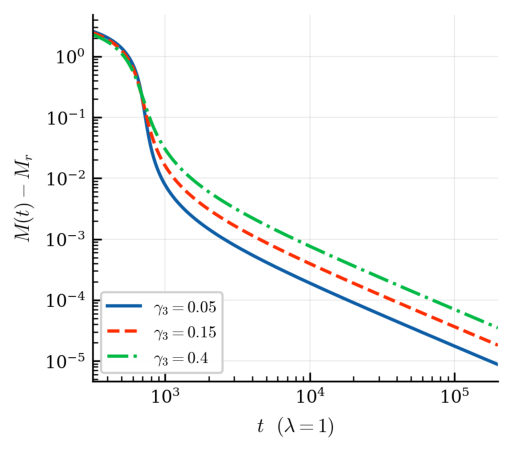
<figcaption class="paper-figure-caption"><b>Fig 1.</b> FIG. 1. Late-time evolution of M(t)−Mr for the G3-corrected CGHS BH (λ = 1, M0 = 5). All curves parallel the analytical t−1 slope (dashed grey), demonstrating an infinite-lifetime power-law freeze-out driven by the double-pole structure of the semiclassical luminosity.</figcaption>
</figure>
<figure class="paper-figure-card">
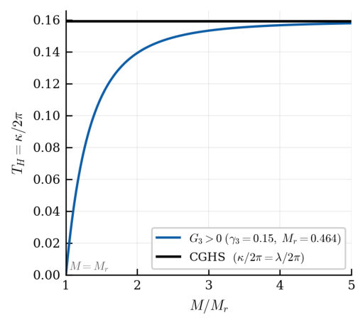
<figcaption class="paper-figure-caption"><b>Fig 2.</b> FIG. 2. Hawking temperature TH versus normalized mass M/Mr for the G3 sector (γ3 = 0.15). TH vanishes continu- ously at the remnant threshold (M/Mr = 1) and recovers the constant CGHS baseline (solid black) in the macroscopic limit M ≫Mr.</figcaption>
</figure>
<figure class="paper-figure-card">
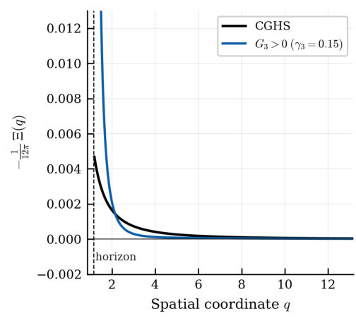
<figcaption class="paper-figure-caption"><b>Fig 3.</b> FIG. 3. Geometric, state-independent part − 1 12π Ξ(q) of the outgoing stress-tensor component, the full component being ⟨T−−⟩= − 1 12π (X+)2Ξ(q)+t−(x−), versus the spatial Kruskal coordinate q (M = 2.5Mr, γ3 = 0.15). The profile vanishes at spatial infinity, and the CGHS background curve remains finite at the horizon. The divergence of the first-order Horndeski correction as q →M/λ, which grows as ϵ−2, isolates the coordinate degeneration of the Kruskal frame, a gauge artifact that cancels in physical curvature invariants.</figcaption>
</figure>
<figure class="paper-figure-card">
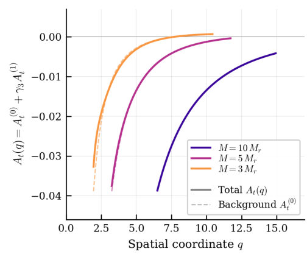
<figcaption class="paper-figure-caption"><b>Fig 4.</b> FIG. 4. Total backreacted gravitational anomaly At(q) in the perturbative regime (M ≥3Mr) for the G3 sector. Horndeski corrections reduce the near-horizon anomaly relative to the CGHS background (dotted lines), reproducing the suppressed asymptotic flux Φ = κ2/48π and confirming the cold-remnant evaporation rate.</figcaption>
</figure>
<figure class="paper-figure-card">
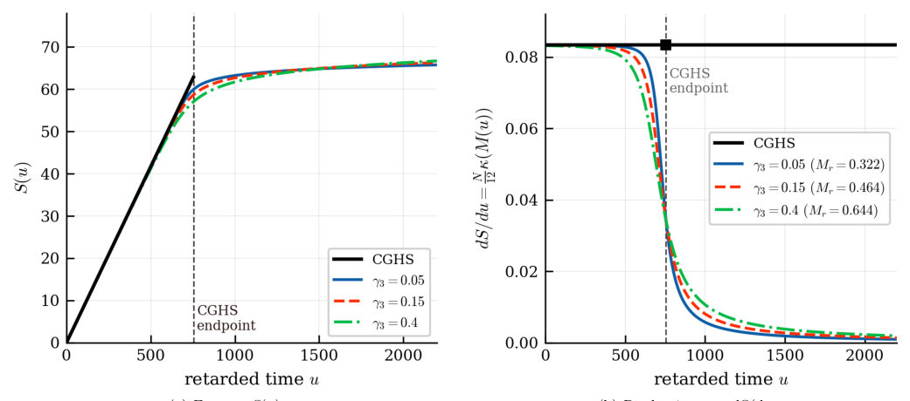
<figcaption class="paper-figure-caption"><b>Fig 5.</b> FIG. 5. Fine-grained entanglement entropy of the Hawking radiation (λ = N = 1, M0 = 5) in the vicinity of the CGHS evaporation endpoint uf ≈754 λ−1 (vertical dotted line). (a) Entropy S(u): the CGHS model (solid black) terminates abruptly at Sfinal CGHS = 4πM0/λ ≈62.8, while each Horndeski-corrected model bends below the CGHS trajectory at u ≲uf and then continues to grow logarithmically for u &gt; uf, transitioning to S(u) ≃Ssat + (4πNMr/3λ) ln u. (b) Entropy production rate dS/du = (N/12)κ(M(u)): the curves peel away from the constant CGHS baseline Nλ/12 at mass-dependent rates, collapsing toward zero as κ →0 at the cold remnant. The larger the coupling γ3 (and hence the larger Mr), the...</figcaption>
</figure>
</div>

<p><strong>Summary.</strong> This work analyzes Hawking evaporation in Horndeski gravity, showing that coupling corrections cause the black hole's temperature to dynamically quench. This process halts evaporation at a stable remnant mass, leading to an asymptotic logarithmic growth of entanglement entropy rather than complete disappearance.</p>
<p><strong>Why it may be interesting.</strong> While focused on gravity, the analysis of entanglement entropy transitioning from linear to logarithmic growth near a saturation point is highly relevant to open quantum systems and information retention in non-equilibrium processes.</p>
<details>
<summary>Detailed structure</summary>
<p><strong>Main problem.</strong> The paper investigates how Horndeski gravity corrections alter the semiclassical Hawking evaporation process of a black hole, specifically addressing the fate of quantum information during late-time evaporation.</p>
<p><strong>Main result.</strong> The BH does not evaporate completely but halts at a stable, macroscopic cold remnant ($M_r$), and the entanglement entropy transitions to an asymptotic logarithmic regime, suggesting information is retained in this remnant.</p>
<p><strong>Method.</strong> The analysis uses semiclassical methods involving evaluating curvature invariants, applying anomaly calculations (conformal trace and Robinson-Wilczek), and deriving resummed temperature/entropy equations.</p>
<p><strong>Model / system.</strong> The system is a two-dimensional Callan-Giddings-Harvey-Strominger (CGHS) black hole geometry perturbed by first-order Horndeski scalar-tensor couplings. The analysis is performed in the context of dimensional reduction from 4D gravity.</p>
<p><strong>Key observables.</strong> Hawking temperature ($T_H$), fine-grained entanglement entropy, surface gravity ($\kappa$), and the BH mass evolution $M(t)$.</p>
<p><strong>Important parameters / regimes.</strong> The remnant mass scale ($M_r$) and coupling constants ($\gamma_3$, $\lambda$). The late-time behavior is characterized by a power-law freeze-out: $M(t) - M_r \propto 1/t$.</p>
<p><strong>Assumptions / limitations.</strong> The analysis relies on extrapolating resummed temperature profiles to the boundary of perturbative control, and certain constraints were imposed during dimensional reduction to maintain stability.</p>
<p><strong>Figures summary.</strong> Figures illustrate the power-law freeze-out of mass difference ($M(t) - M_r$) for G3 corrections, and show how luminosity vanishes smoothly at the remnant mass $M_r$.</p>
<p><strong>Paper structure.</strong> The paper progresses by first establishing that coordinate singularities are artifacts, then deriving dynamical quenching of the Hawking temperature due to anomaly interactions. Finally, it analyzes the late-time evolution using entropy conservation laws to confirm the stable remnant state.</p>
</details>
<details>
<summary>Abstract</summary>
<p>We investigate the semiclassical Hawking evaporation of a two-dimensional Callan-Giddings-Harvey-Strominger (CGHS) black hole perturbed by first-order Horndeski scalar-tensor couplings. By evaluating the exact scalar curvature invariants, we demonstrate that coordinate singularities near the apparent horizon parametrize a physical deformation of the surface gravity while preserving a strictly regular event horizon. In the linear-order $γ_3 ΦX$ coupling sector, the surface gravity and correspondingly the Hawking temperature decreases dynamically as the black hole loses mass. Extrapolating this cooling effect via a resummed temperature equation suggests that evaporation halts, potentially leaving behind a stable, macroscopic cold remnant at the boundary of perturbative control. Utilizing both the conformal trace anomaly and the Robinson-Wilczek gravitational anomaly, we establish that the asymptotic radiation flux identically reflects this geometric shift. Consequently, the fine-grained entanglement entropy of the Hawking radiation departs from linear growth and transitions to an asymptotic logarithmic regime. This indicates that quantum information may be permanently retained within the remnant, altering the standard semiclassical Page curve without requiring a breakdown of horizon regularity.</p>
</details>
<p><sub><a href="#top">↑ back to top</a></sub></p>

<p><a id="paper-2608.07292"></a></p>
<h3 id="critical-dynamics-of-a-scalar-field-near-four-spatial-dimensions"><a href="http://arxiv.org/abs/2608.07292v1">Critical dynamics of a scalar field near four spatial dimensions</a></h3>
<p><strong>Authors:</strong> Laura Batini, Eduardo Grossi<br>
<strong>Type:</strong> theory · <strong>Category:</strong> statistical mechanics · <strong>PDF:</strong> <a href="https://arxiv.org/pdf/2608.07292v1">https://arxiv.org/pdf/2608.07292v1</a><br>
<strong>Analysis basis:</strong> full PDF text, analyzed in chunks
<strong>Topic relevance:</strong> 🔥 <code>non-equilibrium universality</code> <strong>4/5</strong> · <code>driven-dissipative phase transition</code> <strong>3/5</strong> · <code>non-equilibrium dynamics</code> <strong>3/5</strong> · <code>Keldysh / 2PI / non-Gaussian methods</code> <strong>1/5</strong> · <code>correlated / nonlocal dissipation</code> <strong>1/5</strong> · <code>methods for driven-dissipative</code> <strong>1/5</strong></p>
<div class="figure-strip-hint">↔ Scroll figures horizontally</div>
<div class="paper-figures-scroll">
<figure class="paper-figure-card">
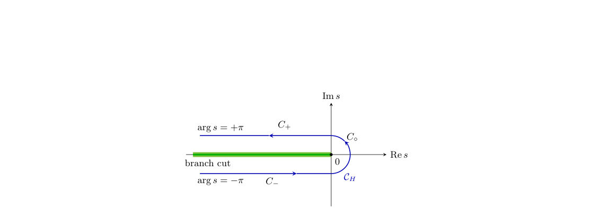
<figcaption class="paper-figure-caption"><b>Fig 1.</b> Figure 1: Hankel contour CH around the negative real axis, decomposed into the lower branch C−, the small circular arc C◦, and the upper branch C+.</figcaption>
</figure>
<figure class="paper-figure-card">
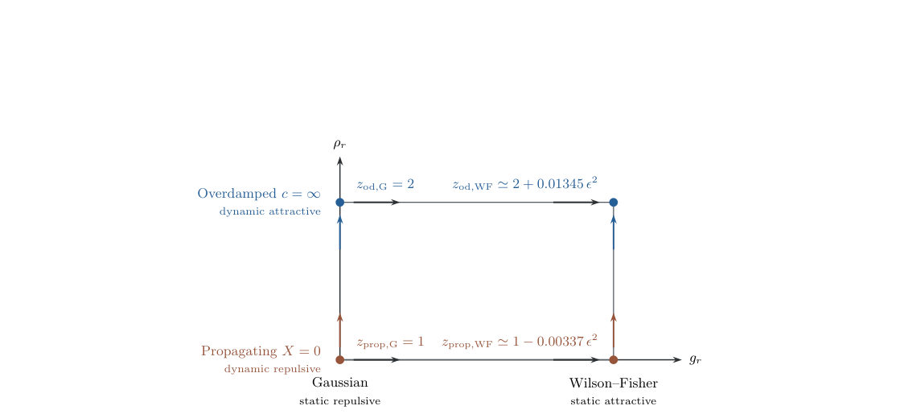
<figcaption class="paper-figure-caption"><b>Fig 2.</b> Figure 3: Local stability of the four fixed points on the mass-tuned critical surface. The propa- gating and overdamped boundaries lie at ρr = 0 and ρr = +∞, respectively. In the static direction, the Gaussian fixed points are repulsive and the Wilson–Fisher fixed points are attractive. In the dynamical direction, the propagating fixed points are repulsive and the overdamped fixed points are attractive. Consequently, the propagating Wilson–Fisher and overdamped Gaussian fixed points are saddles, while the overdamped Wilson–Fisher fixed point is the only fixed point attractive in both directions.</figcaption>
</figure>
</div>

<p><strong>Summary.</strong> This paper analyzes the critical dynamics of a scalar field near four dimensions, focusing on how inertia and dissipation compete. Using supersymmetric field theory and RG methods, the authors demonstrate that while different dynamic limits exist, the propagating regime is inherently unstable when subjected to local equilibrium dissipation. This highlights the fine-tuned nature required for sustained wave propagation at criticality.</p>
<p><strong>Why it may be interesting.</strong> The rigorous treatment of dynamic critical exponents and the stability analysis concerning dissipation provides deep insights into non-equilibrium dynamics relevant to phase transitions in many physical systems.</p>
<details>
<summary>Detailed structure</summary>
<p><strong>Main problem.</strong> The study investigates the critical dynamics of a non-conserved order parameter, specifically analyzing the competition between propagating (relativistic) and overdamped (relaxational) behavior near criticality.</p>
<p><strong>Main result.</strong> The paper shows that while both dynamic limits share static fixed points, they possess distinct dynamical scaling regimes; furthermore, the propagating regime is found to be unstable to any local equilibrium dissipation perturbation.</p>
<p><strong>Method.</strong> The analysis employs a supersymmetric field-theory formulation combined with two-loop Renormalization Group (RG) techniques applied near four spatial dimensions.</p>
<p><strong>Model / system.</strong> The system is a scalar field theory ($\phi(t, x)$) in thermal equilibrium whose dynamics are governed by an action incorporating both inertial and dissipative terms. The analysis compares the strictly overdamped limit to the dissipationless propagating limit.</p>
<p><strong>Key observables.</strong> Dynamic critical exponent (z), static Gaussian and Wilson–Fisher fixed points, and the stability of the RG flow concerning local dissipation.</p>
<p><strong>Important parameters / regimes.</strong> The ratio controlling local friction ($X$), the dimensionality ($d=4$), and the presence/absence of local equilibrium dissipation.</p>
<p><strong>Assumptions / limitations.</strong> The theory is assumed to be in thermal equilibrium, requiring adherence to the fluctuation–dissipation relation (KMS symmetry).</p>
<p><strong>Paper structure.</strong> The paper systematically builds the supersymmetric structure, derives the effective action, analyzes static corrections, and then treats the overdamped and dissipationless limits separately before concluding with a comprehensive RG flow analysis.</p>
</details>
<details>
<summary>Abstract</summary>
<p>The critical dynamics of a non-conserved order parameter is generally expected to become overdamped at long distances, even when propagating modes occur at microscopic or intermediate scales. We investigate the critical dynamics of a scalar field theory in thermal equilibrium which, in addition to local friction and noise, also contains a time-dependent second-order kinetic term. We show how to build a supersymmetric field-theory formulation. Using a two-loop expansion about four spatial dimensions, we show that the propagating and strictly overdamped limits share the same static Gaussian and Wilson-Fisher fixed points but realize distinct dynamical scaling regimes. The overdamped limit reproduces Model A. On the surface where local friction and noise vanish, the theory instead supports an interacting propagating fixed point whose dynamic exponent receives corrections at two loops. We demonstrate that coarse-graining does not generate a local dissipative operator on this surface, which therefore remains invariant under the RG flow. Local dissipation is nevertheless relevant at the propagating fixed point: an arbitrarily small equilibrium friction-noise perturbation drives the flow away from propagating scaling. Propagating critical dynamics thus defines a consistent but fine-tuned regime that is unstable to local equilibrium dissipation.</p>
</details>
<p><sub><a href="#top">↑ back to top</a></sub></p>

<p><a id="paper-2608.06875"></a></p>
<h3 id="qcore-a-quantum-control-oriented-real-time-execution-architecture-with-extensible-closed-loop-services-and-shared-ai-acceleration"><a href="http://arxiv.org/abs/2608.06875v1">QCORE: A Quantum-Control-Oriented Real-Time Execution Architecture with Extensible Closed-Loop Services and Shared AI Acceleration</a></h3>
<p><strong>Authors:</strong> Heyue Li, Yanshu Guo, Qichun Liu, Tiefu Li, Zhihua Wang, Hanjun Jiang<br>
<strong>Type:</strong> both · <strong>Category:</strong> quantum information and computing · <strong>PDF:</strong> <a href="https://arxiv.org/pdf/2608.06875v1">https://arxiv.org/pdf/2608.06875v1</a><br>
<strong>Analysis basis:</strong> full PDF text, analyzed in chunks
<strong>Topic relevance:</strong> 🔥 <code>QC/QI experiment</code> <strong>4/5</strong> · <code>quantum measurements</code> <strong>3/5</strong> · <code>measurement-induced transitions</code> <strong>2/5</strong> · <code>analog quantum simulation</code> <strong>1/5</strong> · <code>driven-dissipative phase transition</code> <strong>1/5</strong> · <code>methods for driven-dissipative</code> <strong>1/5</strong> · <code>non-equilibrium dynamics</code> <strong>1/5</strong></p>
<div class="figure-strip-hint">↔ Scroll figures horizontally</div>
<div class="paper-figures-scroll">
<figure class="paper-figure-card">
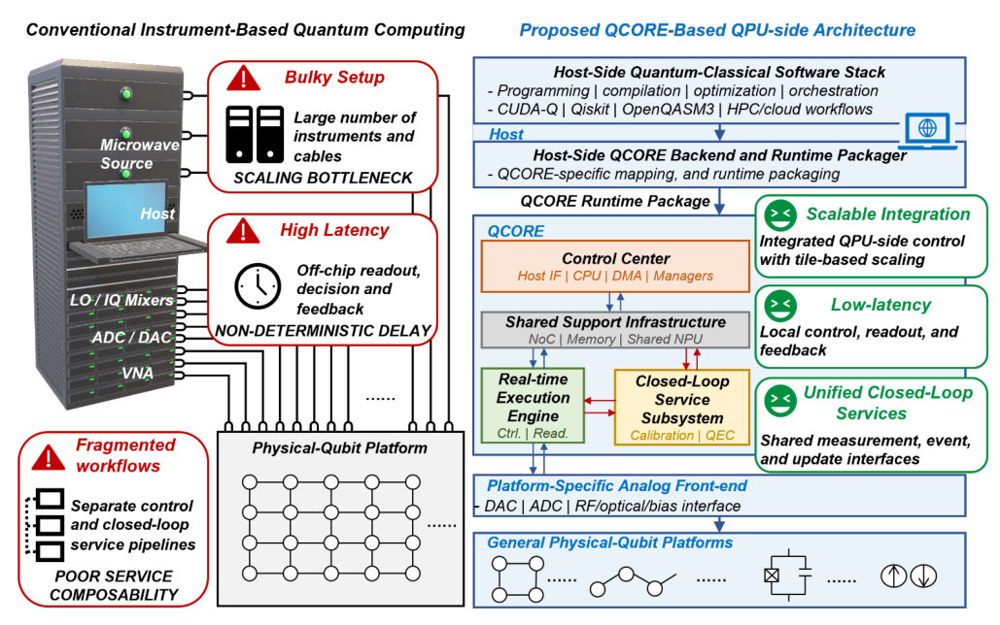
<figcaption class="paper-figure-caption"><b>Fig 1.</b> FIGURE 1. System-boundary comparison between conventional instrument-based quantum control and the QCORE reference architecture.</figcaption>
</figure>
<figure class="paper-figure-card">
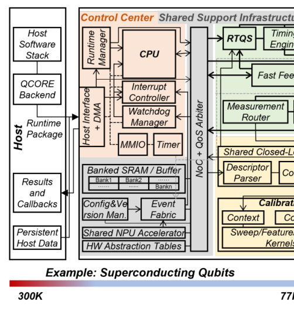
<figcaption class="paper-figure-caption"><b>Fig 2.</b> FIGURE 2. QCORE top-level reference architecture and inter-module data flows.</figcaption>
</figure>
<figure class="paper-figure-card">
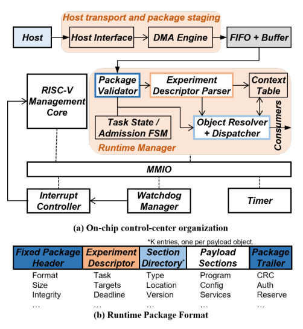
<figcaption class="paper-figure-caption"><b>Fig 3.</b> FIGURE 3. Control-Center hardware organization and runtime- package field format.</figcaption>
</figure>
<figure class="paper-figure-card">
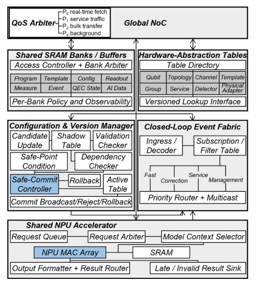
<figcaption class="paper-figure-caption"><b>Fig 4.</b> FIGURE 4. Hardware organization of the Shared Support Infrastructure.</figcaption>
</figure>
<figure class="paper-figure-card">
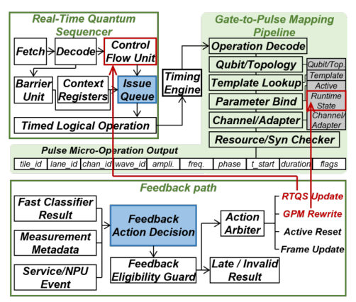
<figcaption class="paper-figure-caption"><b>Fig 5.</b> FIGURE 5. Real-time control, readout, and feedback paths.</figcaption>
</figure>
</div>

<p><strong>Summary.</strong> This paper introduces QCORE, a novel digital reference architecture designed to manage all necessary services—control, readout, calibration, and error correction—for scaling quantum processors. By partitioning tasks into dedicated hardware modules and enforcing strict versioning via safe-commit mechanisms, QCORE achieves superior real-time performance and reliability for complex quantum experiments.</p>
<p><strong>Why it may be interesting.</strong> For AMO physicists working on open quantum systems, this work provides a crucial blueprint for the classical control infrastructure needed to reliably operate and characterize superconducting qubits in real-time, directly addressing hardware bottlenecks beyond the physics itself.</p>
<details>
<summary>Detailed structure</summary>
<p><strong>Main problem.</strong> Scaling quantum processors requires integrating complex, concurrent control, readout, calibration, and error correction services under strict latency and shared-resource constraints.</p>
<p><strong>Main result.</strong> The proposed QCORE architecture successfully unifies these disparate functions into a single digital reference boundary, demonstrating significant performance improvements in feedback latency and error reduction compared to existing systems.</p>
<p><strong>Method.</strong> The authors designed QCORE as a hardware-partitioned, real-time execution architecture that uses transaction-level and event-driven modeling to manage task admission, resource scheduling, and atomic state commits.</p>
<p><strong>Model / system.</strong> The system targets Quantum Processing Units (QPUs) utilizing transmon qubits. The control flow involves managing tasks through a Runtime Manager, executing sequences like Rabi-Ramsey calibration, and incorporating error correction codes (QEC).</p>
<p><strong>Key observables.</strong> P99 latency of the feedback path ($\approx 1.984 L_{	ext{max}}$), reduction in mean frequency error ($83.2\%$), and state-assignment error reduction from $10.39\%$ to $5.37\%$.</p>
<p><strong>Important parameters / regimes.</strong> Background load (e.g., 0.8), maximum readout drift, and the number of configuration transactions (100,000).</p>
<p><strong>Assumptions / limitations.</strong> Deterministic execution is defined behaviorally rather than by fixed RTL cycle latency; late or version-mismatched results cannot alter the current real-time state.</p>
<p><strong>Figures summary.</strong> Figures illustrate the QCORE architecture, comparing it to conventional control methods, and detail functional flows for calibration (Rabi-Ramsey) and Randomized Benchmarking (RB).</p>
<p><strong>Paper structure.</strong> The paper introduces the limitations of existing quantum control systems, proposes the modular QCORE reference architecture with its four hardware partitions, details the execution flow through task management and resource scheduling, and validates performance using multiple complex workloads.</p>
</details>
<details>
<summary>Abstract</summary>
<p>Scalable quantum processors require control, readout, feedback, calibration, and error correction to coexist under bounded latency and shared-resource constraints, whereas existing platforms typically optimize only a subset of these capabilities. This article presents QCORE (Quantum-Control-Oriented Real-Time Execution), a QPU-side digital control reference architecture positioned between the Host and a platform-specific analog/mixed-signal front end. QCORE separates task management, shared resources, hard-real-time execution, and long-timescale services into four hardware partitions. A fast-result sideband closes same-round feedback, a Measurement Packet provides a traceable measurement and service interface, and a common service-control skeleton, Tile-local QEC, and versioned safe-point commit organize calibration, error correction, and long-term state updates. Transaction-level, event-driven, and quantum-behavioral models are used for evaluation. At a background load of 0.8, the $P_{99}$ latency of the shared Measurement Packet/Event feedback path is $(1.984\pm0.004)L_{\max}$. Closed-loop operation reduces the mean frequency error by $83.2\%\pm0.8\%$ and lowers the state-assignment error at maximum readout drift from $10.39\%\pm0.54\%$ to $5.37\%\pm0.29\%$. No unsafe acceptance or mixed-version observation is observed in 100,000 configuration transactions, and Tile-local QEC reduces modeled global-boundary demand and yields a $2.08\times$ capacity-normalized scaling estimate.</p>
</details>
<p><sub><a href="#top">↑ back to top</a></sub></p>

<p><a id="paper-2608.07246"></a></p>
<h3 id="the-two-sided-bogoliubov-inequality-in-von-neumann-algebras-conceptualizes-the-free-energy-quantum-correlations-link"><a href="http://arxiv.org/abs/2608.07246v1">The two-sided Bogoliubov inequality in von Neumann algebras conceptualizes the free energy--quantum correlations link</a></h3>
<p><strong>Authors:</strong> Benedikt M. Reible, Albert Much, Rainer Verch, Christof Schütte, Luigi Delle Site<br>
<strong>Type:</strong> theory · <strong>Category:</strong> statistical mechanics · <strong>PDF:</strong> <a href="https://arxiv.org/pdf/2608.07246v1">https://arxiv.org/pdf/2608.07246v1</a><br>
<strong>Analysis basis:</strong> full PDF text, analyzed in chunks
<strong>Topic relevance:</strong> 🔥 <code>entanglement &amp; information structure</code> <strong>4/5</strong> · <code>non-equilibrium dynamics</code> <strong>2/5</strong> · <code>non-equilibrium universality</code> <strong>2/5</strong> · <code>Keldysh / 2PI / non-Gaussian methods</code> <strong>1/5</strong> · <code>analog quantum simulation</code> <strong>1/5</strong> · <code>correlated / nonlocal dissipation</code> <strong>1/5</strong> · <code>driven-dissipative phase transition</code> <strong>1/5</strong> · <code>methods for driven-dissipative</code> <strong>1/5</strong></p>
<div class="figure-strip-hint">↔ Scroll figures horizontally</div>
<div class="paper-figures-scroll">
<figure class="paper-figure-card">
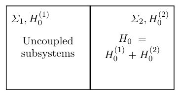
<figcaption class="paper-figure-caption"><b>Fig 1.</b> Figure 1. Illustration of the division of a large thermodynamic quantum system into two non-interacting subsystems. Figure adapted from Ref. [56].</figcaption>
</figure>
</div>

<p><strong>Summary.</strong> This paper generalizes the two-sided Bogoliubov inequality from finite quantum systems to abstract von Neumann algebras. By employing relative entropy and unbounded perturbation theory, the authors establish rigorous variational bounds for the relative free energy. This provides a mathematically robust, thermodynamically grounded criterion for quantifying entanglement in complex, infinite-dimensional quantum systems.</p>
<p><strong>Why it may be interesting.</strong> This work provides rigorous mathematical tools (generalized inequalities) to quantify entanglement in complex, infinite-dimensional systems by framing it within established thermodynamic principles of statistical mechanics.</p>
<details>
<summary>Detailed structure</summary>
<p><strong>Main problem.</strong> The work aims to generalize the quantum-mechanical two-sided Bogoliubov inequality, which links free energy to quantum correlations, to the abstract setting of von Neumann algebras.</p>
<p><strong>Main result.</strong> They establish computable bounds for the relative free energy using generalized inequalities and derive variational expressions that extend bounded-perturbation principles to unbounded systems.</p>
<p><strong>Method.</strong> The methodology involves advanced mathematical tools from operator algebras, specifically utilizing Araki-Uhlmann relative entropy and the framework of unbounded perturbation theory for KMS states.</p>
<p><strong>Model / system.</strong> The analysis considers general quantum systems described by a von Neumann algebra $M$ with a faithful KMS state $\omega$, modeling interactions via perturbations $U$. The initial physical context involves interacting particles in infinite-dimensional systems, such as those found in quantum field theory.</p>
<p><strong>Key observables.</strong> Relative free energy ($F(\omega_U, \omega)$) and the entanglement quantification derived from thermodynamic measurements.</p>
<p><strong>Important parameters / regimes.</strong> Inverse temperature ($eta$), interaction strength (related to $U$), and the structure of the von Neumann algebra.</p>
<p><strong>Assumptions / limitations.</strong> The generalization relies on assuming the existence of a faithful KMS state $\omega$ and employing advanced mathematical machinery like modular theory.</p>
<p><strong>Paper structure.</strong> The paper reviews the known quantum-mechanical inequality, then systematically generalizes it to von Neumann algebras using relative entropy and unbounded perturbation theory. Finally, variational expressions for the relative free energy are derived as a key result.</p>
</details>
<details>
<summary>Abstract</summary>
<p>The quantum-mechanical two-sided Bogoliubov inequality provides upper and lower bounds for the free energy required to separate a system of interacting particles into independent subsystems. The bounds can be calculated straightforwardly from the ensemble average of the interface energy, bypassing the direct evaluation of the free energy. In this work, we generalize the two-sided Bogoliubov inequality to arbitrary von Neumann algebras by employing the Araki-Uhlmann relative entropy and the framework of unbounded perturbation theory of KMS states. Furthermore, we obtain variational expressions for the relative free energy that extend existing bounded-perturbation principles to the unbounded setting. Crucially, these mathematical developments yield a physically well-founded thermodynamic criterion for the quantification of entanglement in infinite-dimensional systems.</p>
</details>
<p><sub><a href="#top">↑ back to top</a></sub></p>

<p><a id="paper-2608.07090"></a></p>
<h3 id="non-monotonic-dependence-of-oam-schmidt-spectrum-on-crystal-thickness"><a href="http://arxiv.org/abs/2608.07090v1">Non-monotonic dependence of OAM Schmidt spectrum on crystal thickness</a></h3>
<p><strong>Authors:</strong> Harshal Jain, Suman Karan, Radhika Prasad, Anand K. Jha<br>
<strong>Type:</strong> both · <strong>Category:</strong> quantum information and computing · <strong>PDF:</strong> <a href="https://arxiv.org/pdf/2608.07090v1">https://arxiv.org/pdf/2608.07090v1</a><br>
<strong>Analysis basis:</strong> full PDF text, analyzed in chunks
<strong>Topic relevance:</strong> 🔥 <code>entanglement &amp; information structure</code> <strong>4/5</strong> · <code>interference shaping light</code> <strong>3/5</strong> · <code>quantum optics experiment</code> <strong>3/5</strong> · <code>QC/QI experiment</code> <strong>1/5</strong></p>
<div class="figure-strip-hint">↔ Scroll figures horizontally</div>
<div class="paper-figures-scroll">
<figure class="paper-figure-card">
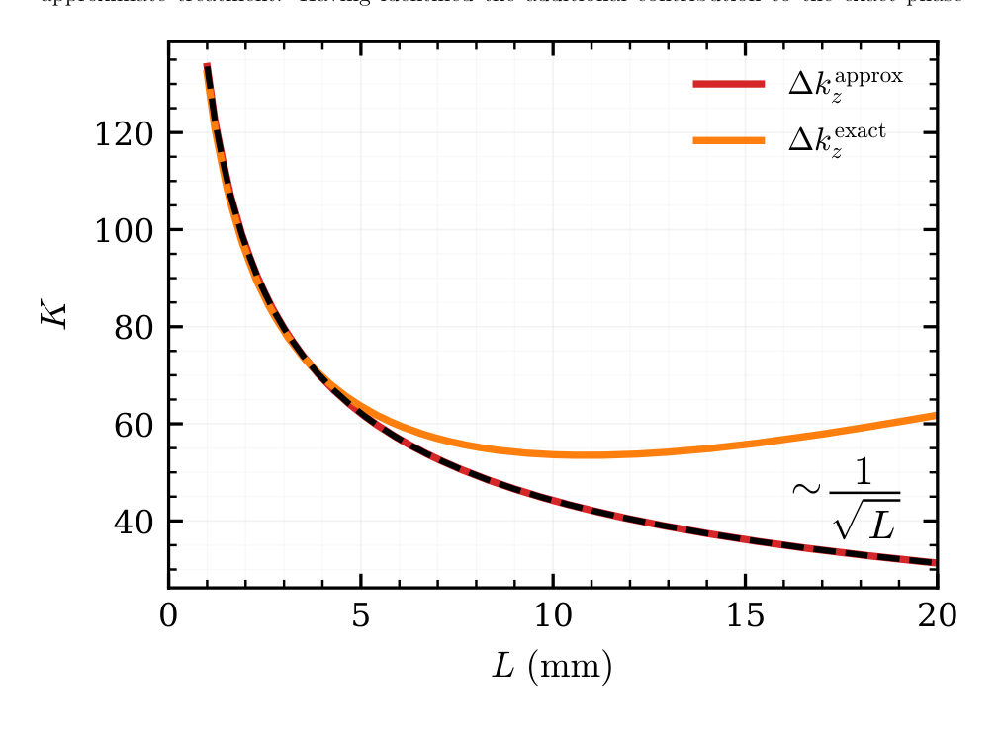
<figcaption class="paper-figure-caption"><b>Fig 1.</b> FIG. 1. Dependence of the Schmidt number on crystal thickness. The red curve cor-</figcaption>
</figure>
<figure class="paper-figure-card">
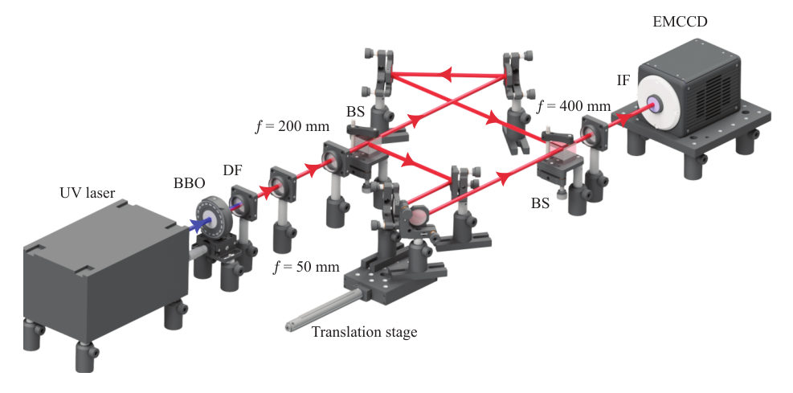
<figcaption class="paper-figure-caption"><b>Fig 2.</b> FIG. 2. Schematic of the experimental setup. UV laser of central wavelength 355 nm; BBO,</figcaption>
</figure>
<figure class="paper-figure-card">
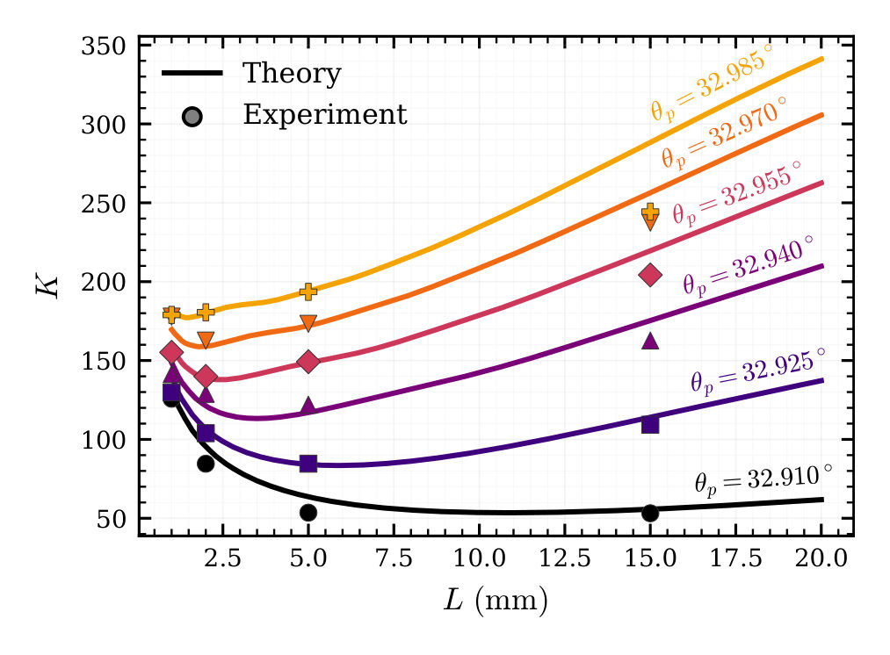
<figcaption class="paper-figure-caption"><b>Fig 3.</b> FIG. 3. Dependence of the Schmidt number on crystal thickness for various phase-</figcaption>
</figure>
</div>

<p><strong>Summary.</strong> The paper experimentally and theoretically investigates how crystal thickness affects the dimensionality (Schmidt number) of OAM-entangled photon pairs generated via SPDC. The key finding is the first observation of non-monotonic behavior, which arises from spatial walk-off effects in anisotropic crystals. This work emphasizes that using the full phase-matching theory, rather than approximations, is essential for accurate quantum state characterization.</p>
<p><strong>Why it may be interesting.</strong> This research provides a crucial refinement to the theoretical understanding of high-dimensional quantum state generation in optics, showing that neglecting geometric effects like walk-off can lead to fundamentally incorrect predictions about entanglement resource scaling with device size.</p>
<details>
<summary>Detailed structure</summary>
<p><strong>Main problem.</strong> The study investigates how the dimensionality of orbital angular momentum (OAM) entangled states, quantified by the Schmidt number, changes as a function of nonlinear crystal thickness.</p>
<p><strong>Main result.</strong> Contrary to previous predictions, the authors experimentally and theoretically demonstrate that the Schmidt number exhibits non-monotonic behavior—increasing after an initial decrease—due to spatial walk-off effects in anisotropic crystals.</p>
<p><strong>Method.</strong> The work combines experimental measurements using SPDC with theoretical modeling that incorporates the full phase-matching function, explicitly accounting for spatial walk-off terms neglected in prior approximations.</p>
<p><strong>Model / system.</strong> The system involves generating OAM-entangled photon pairs via Spontaneous Parametric Down-Conversion (SPDC) within an anisotropic nonlinear crystal like BBO. The state is analyzed using the Schmidt decomposition formalism.</p>
<p><strong>Key observables.</strong> Angular Schmidt spectrum ($S_l$) and the associated Schmidt number ($K$).</p>
<p><strong>Important parameters / regimes.</strong> Crystal thickness ($L$), phase-matching angle ($    heta_p$), and the spatial walk-off term ($\Delta k_{ ext{extra}}^z$).</p>
<p><strong>Assumptions / limitations.</strong> The primary limitation addressed is the failure of previous theoretical models that used approximate phase-matching conditions by neglecting spatial walk-off.</p>
<p><strong>Figures summary.</strong> Figure 1 compares the Schmidt number dependence on thickness, showing a monotonic decrease (approximate) versus a non-monotonic increase (exact/experimental). Appendix figures compare zero-radial-mode spectra using both approximate and exact formulations, highlighting divergence at larger thicknesses.</p>
<p><strong>Paper structure.</strong> The paper first establishes the theoretical framework for OAM entanglement via SPDC. It then contrasts previous approximate models with the full model incorporating spatial walk-off. The core of the work presents experimental measurements confirming the non-monotonic trend predicted by the exact theory, followed by detailed comparisons of spectral convergence across different approximations.</p>
</details>
<details>
<summary>Abstract</summary>
<p>The orbital angular momentum (OAM) of photons provides a high-dimensional resource for quantum information protocols. The dimensionality of OAM-entangled states generated via spontaneous parametric down-conversion (SPDC) is quantified by the angular Schmidt spectrum. Here, we experimentally investigate the dependence of the angular Schmidt spectrum on the thickness of the nonlinear crystal. Contrary to previous studies reporting a monotonic decrease in the Schmidt number with increasing crystal thickness, we report the first experimental observation of a nonmonotonic behavior, as we demonstrate an increase in the Schmidt number beyond a certain crystal thickness. We attribute this to the spatial walk-off effect in the anisotropic nonlinear crystal and explain it using a theoretical model that is devoid of standard phase-matching approximations. These findings can have important implications for high-dimensional entangled state generation.</p>
</details>
<p><sub><a href="#top">↑ back to top</a></sub></p>

<p><a id="paper-2608.06995"></a></p>
<h3 id="fugacity-resolved-stabilizer-entropy-in-critical-quantum-chains-discrete-selberg-sums-and-exactly-solvable-renyi-indices"><a href="http://arxiv.org/abs/2608.06995v1">Fugacity-Resolved Stabilizer Entropy in Critical Quantum Chains: Discrete Selberg Sums and Exactly Solvable Rényi Indices</a></h3>
<p><strong>Authors:</strong> Reyhaneh Khasseh, M. A. Rajabpour<br>
<strong>Type:</strong> theory · <strong>Category:</strong> statistical mechanics · <strong>PDF:</strong> <a href="https://arxiv.org/pdf/2608.06995v1">https://arxiv.org/pdf/2608.06995v1</a><br>
<strong>Analysis basis:</strong> full PDF text, analyzed in chunks
<strong>Topic relevance:</strong> 🔥 <code>entanglement &amp; information structure</code> <strong>4/5</strong> · <code>analog quantum simulation</code> <strong>2/5</strong> · <code>driven-dissipative phase transition</code> <strong>1/5</strong> · <code>methods for driven-dissipative</code> <strong>1/5</strong> · <code>non-equilibrium dynamics</code> <strong>1/5</strong> · <code>non-equilibrium universality</code> <strong>1/5</strong></p>
<div class="figure-strip-hint">↔ Scroll figures horizontally</div>
<div class="paper-figures-scroll">
<figure class="paper-figure-card">
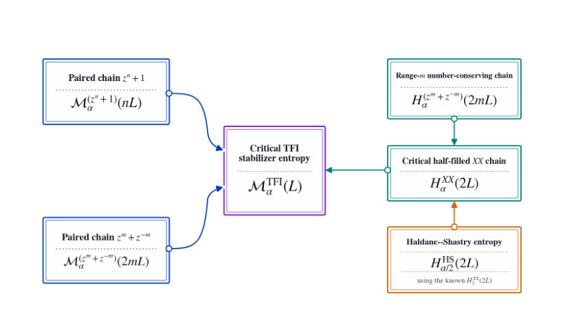
<figcaption class="paper-figure-caption"><b>Fig 1.</b> FIG. 1. Exact entropy reductions to the critical TFI stabilizer R´enyi entropy. Stabilizer decimation applies to paired free-fermion chains, probability factorization applies to the range-m number-conserving chains, and the Haldane–Shastry distribution is the order-two escort of the half-filled XX distribution. In every case, the required input is supplied by MTFI α .</figcaption>
</figure>
<figure class="paper-figure-card">
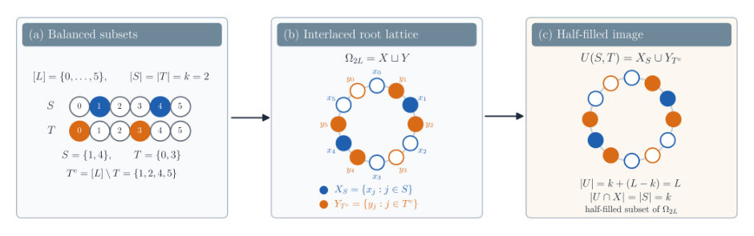
<figcaption class="paper-figure-caption"><b>Fig 2.</b> FIG. 2. Schematic of the bijection between a balanced minor label and a half-filled configuration on the doubled root lattice, illustrated for a six-site example with two selected indices. Panel (a) shows the two balanced subsets that label the minor. Panel (b) maps the first subset to selected roots on one sublattice and the complement of the second subset to selected roots on the interlaced sublattice. Panel (c) combines these selections into a half-filled configuration on the doubled lattice. The construction is reversible, so the original balanced subsets can be recovered uniquely from the final configuration.</figcaption>
</figure>
<figure class="paper-figure-card">
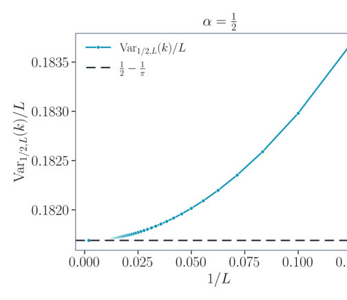
<figcaption class="paper-figure-caption"><b>Fig 3.</b> FIG. 3. Finite-size scaling of the degree fluctuations. Left: Var1/2,L(k)/L approaches 1</figcaption>
</figure>
<figure class="paper-figure-card">
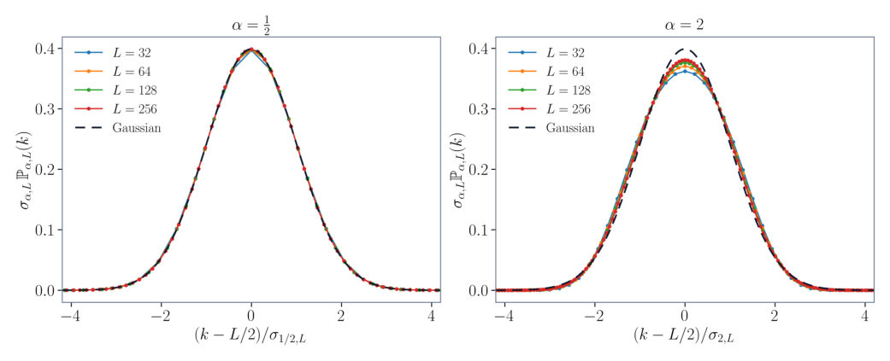
<figcaption class="paper-figure-caption"><b>Fig 4.</b> FIG. 4. Gaussian scaling collapse of the degree distributions at α = 1 2 (left) and α = 2 (right). We plot σα,LPα,L(k) against (k −L/2)/σα,L for L = 32, 64, 128, and 256. The dashed curve is the standard-normal density e−x2/2/ √</figcaption>
</figure>
<figure class="paper-figure-card">
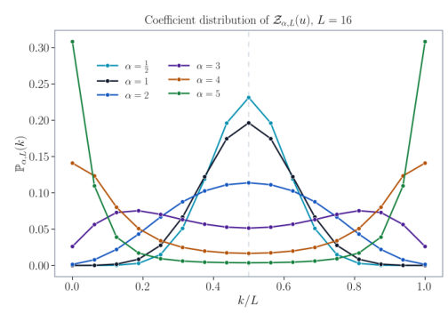
<figcaption class="paper-figure-caption"><b>Fig 5.</b> FIG. 5. Normalized balanced-degree distribution Pα,L(k) at L = 16 for several R´enyi tilts. Complement symmetry enforces reflection about k/L = 1/2. Increasing α changes the finite- size profile from a central peak to a symmetric bimodal form and eventually to strong endpoint dominance. The curves at α &gt; 2 show a finite-size evolution and do not by themselves establish a sharp thermodynamic transition.</figcaption>
</figure>
</div>

<p><strong>Summary.</strong> This theoretical paper investigates the stabilizer Rényi entropy in critical quantum chains, particularly the TFI model. By introducing a fugacity-resolved partition function, the authors map the problem to discrete Selberg ensembles. They derive exact mathematical results for specific Rényi indices ($\alpha=1/2, 1, 2$), revealing deep connections between entanglement measures and advanced combinatorial identities.</p>
<p><strong>Why it may be interesting.</strong> The connection between quantum entanglement measures (Rényi entropy) in critical systems and advanced mathematical physics tools like Selberg integrals and Jack-Kostka representations provides deep insights into the structure of ground state correlations in 1D quantum matter.</p>
<details>
<summary>Detailed structure</summary>
<p><strong>Main problem.</strong> The core problem is determining which Rényi indices allow for an exact finite-size compression of the all-minors sum derived from calculating stabilizer Rényi entropy in critical quantum chains.</p>
<p><strong>Main result.</strong> The analysis yields explicit product formulas and connections to discrete Selberg ensembles for specific Rényi indices ($\alpha=1/2, 1, 2$), showing that the degree distribution converges to Gaussian limits under appropriate rescaling at these points.</p>
<p><strong>Method.</strong> The authors introduce a fugacity-resolved partition function for the critical transverse-field Ising chain and map the resulting all-minors sum to a checkerboard-weighted discrete Selberg ensemble on a doubled root lattice.</p>
<p><strong>Model / system.</strong> The study focuses on the critical transverse-field Ising (TFI) quantum chain, which serves as a common finite-size building block for calculating stabilizer and computational-basis Shannon--Rényi entropies. The analysis is generalized to other paired free-fermion chains.</p>
<p><strong>Key observables.</strong> Stabilizer Rényi entropy ($M_\alpha$), the full counting statistics of the Pauli expectation-value distribution, and the degree distribution symmetry.</p>
<p><strong>Important parameters / regimes.</strong> The Rényi index ($\alpha$), system size ($L$), and fugacity ($\mu$ or $    ext{unit } \mu$).</p>
<p><strong>Assumptions / limitations.</strong> The analysis relies on mapping the problem to known mathematical structures like discrete Selberg ensembles, which allows for exact evaluations at specific integer/half-integer indices.</p>
<p><strong>Figures summary.</strong> Not specified in detail, but the notes mention Figure 1 illustrating entropy reductions via decimation, factorization, and escort relations, and Table I summarizing these reduction relations.</p>
<p><strong>Paper structure.</strong> The paper progresses by establishing the physical context (TFI chain entropy), developing the mathematical machinery (fugacity-resolved partition function mapping to Selberg ensembles), deriving exact results for specific $\alpha$ values using determinant/Pfaffian compressions, and finally discussing the general behavior and open algebraic questions.</p>
</details>
<details>
<summary>Abstract</summary>
<p>Stabilizer Rényi entropy quantifies the nonstabilizerness of a quantum state through Rényi moments of its Pauli expectation-value distribution. Its standard form sums over Pauli-string degrees and retains only the total Rényi weight. We introduce a fugacity-resolved partition function for the critical transverse-field Ising chain that resolves this degree in the balanced Majorana representation and generates its full counting statistics. This Ising problem extends beyond a single model: exact decimation identities and the correspondence with the half-filled \(XX\) chain establish it as a common finite-size building block for stabilizer and computational-basis Shannon--Rényi entropies. We map the fugacity-resolved all-minors sum, for every positive Rényi index, to a checkerboard-weighted discrete Selberg ensemble on a half-filled doubled root lattice. For positive integer indices, it reduces to a finite aliased Dyson constant term. At \(α=\tfrac12,1,2\), determinant and Pfaffian compressions yield product formulas. At \(α=4\), the generic-fugacity problem admits an exact inverse Jack--Kostka representation, while at unit fugacity a complementary middle-minor identity relates it to the square of the \(α=2\) result. These generating functions determine the balanced-degree statistics. Complement symmetry makes the distribution symmetric about \(k=L/2\), with an index-dependent width. It is exactly binomial at \(α=1\), has variance proportional to \(L\) at \(α=\tfrac12\), and develops an \(L\log L\) enhancement at \(α=2\). After variance rescaling, the centered distributions converge to Gaussian limits at all three indices. Beyond these solvable cases, finite-size numerics reveal an evolution from a central peak to a symmetric bimodal profile and eventually to endpoint dominance as the Rényi index increases.</p>
</details>
<p><sub><a href="#top">↑ back to top</a></sub></p>

<p><a id="paper-2608.06883"></a></p>
<h3 id="extracting-the-pairing-gap-from-van-hove-singularities-in-rf-spectra-of-the-fermi-hubbard-model"><a href="http://arxiv.org/abs/2608.06883v1">Extracting the pairing gap from van Hove singularities in rf spectra of the Fermi Hubbard model</a></h3>
<p><strong>Authors:</strong> Chuping Li, Kaichao Zhang, Junru Wu, Yuxuan Wu, Dingli Yuan, Pengyi Chen, Lin Sun, Qijin Chen<br>
<strong>Type:</strong> theory · <strong>Category:</strong> quantum gases · <strong>PDF:</strong> <a href="https://arxiv.org/pdf/2608.06883v1">https://arxiv.org/pdf/2608.06883v1</a><br>
<strong>Analysis basis:</strong> full PDF text, analyzed in chunks
<strong>Topic relevance:</strong> 🔥 <code>analog quantum simulation</code> <strong>4/5</strong> · <code>Keldysh / 2PI / non-Gaussian methods</code> <strong>3/5</strong> · <code>driven-dissipative phase transition</code> <strong>1/5</strong> · <code>methods for driven-dissipative</code> <strong>1/5</strong></p>
<div class="figure-strip-hint">↔ Scroll figures horizontally</div>
<div class="paper-figures-scroll">
<figure class="paper-figure-card">
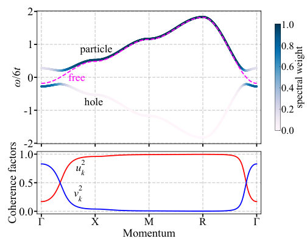
<figcaption class="paper-figure-caption"><b>Fig 1.</b> Figure 1. Representative spectral function of the 3D attractive FHM at Uc and Tc for n = 0.1. The results are obtained from self- consistent solutions yielding ∆= 0.207 and µ = 0.182 (in units of 6t). The upper and lower blue curves denote the particle and hole quasiparticle branches, respectively, with the two branches color- coded by their spectral weight. The dispersions are plotted along the high-symmetry lines of the first Brillouin zone, with Γ = (0, 0, 0), X = (π, 0, 0), M = (π, π, 0), and R = (π, π, π). The magenta curve represents the noninteracting band dispersion. The lower panel shows the coherence factors u2 k and v2 k, corresponding to the spectral weights of the two...</figcaption>
</figure>
<figure class="paper-figure-card">
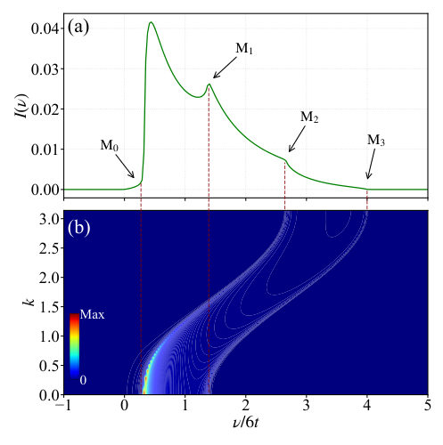
<figcaption class="paper-figure-caption"><b>Fig 2.</b> Figure 2. (a) rf current I(ν), i.e., the momentum-integrated rf spec- trum, at Tc for U/6t = −1.8 and n = 0.1. The four types of vHSs are labeled on the curve. (b) The z-integrated, partially momentum-resolved rf spectrum I(k, ν) plotted along the projected face-diagonal direction k∥= (k, k). The red dashed lines align the corresponding vHS features in (a) and (b).</figcaption>
</figure>
<figure class="paper-figure-card">
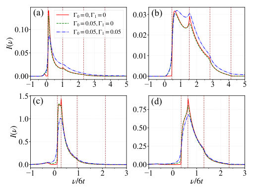
<figcaption class="paper-figure-caption"><b>Fig 3.</b> Figure 4. rf current I(ν) as a function of detuning ν for (a) n = 0.1, U = Uc, (b) n = 0.1, U/6t = −2, (c) n = 1, U = Uc, and (d) n = 1, U/6t = −2, for various Γ0 and Γ1. The vertical lines indicate the rf detunings corresponding to the M0–M3 vHSs.</figcaption>
</figure>
<figure class="paper-figure-card">
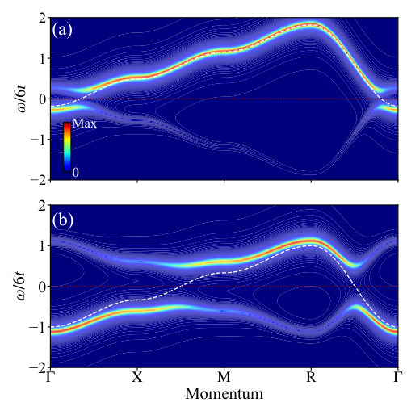
<figcaption class="paper-figure-caption"><b>Fig 4.</b> Figure 3. Spectral function A(k, ω) of the 3D attractive FHM at Tc and Uc for (a) n = 0.1 and (b) n = 1, with Γ0 = Γ1 = 0.05. The white dashed line denotes the noninteracting band dispersion.</figcaption>
</figure>
<figure class="paper-figure-card">
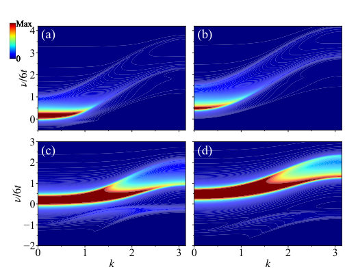
<figcaption class="paper-figure-caption"><b>Fig 5.</b> Figure 5. The kz-integrated, (kx, ky)-resolved rf spectra I(k, ν) at Tc along the face-diagonal direction k∥= (k, k) for (a) n = 0.1, U = Uc, (b) n = 0.1, U/6t = −2, (c) n = 1, U = Uc, and (d) n = 1, U/6t = −2. The same color saturation value is applied across all panels to enhance the visibility of weak signals.</figcaption>
</figure>
</div>

<p><strong>Summary.</strong> The authors propose using van Hove singularities (vHSs) observed in the rf spectra of the 3D attractive Fermi Hubbard model as a highly robust method to determine the pairing gap ($\Delta$) and chemical potential ($\mu$). By showing that vHS positions depend only on these two parameters, measuring just two distinct features allows for parameter extraction without needing full spectral fitting. This establishes vHS analysis as a practical diagnostic tool for quantum simulation experiments.</p>
<p><strong>Why it may be interesting.</strong> This provides a concrete, measurable spectroscopic diagnostic tool for characterizing superfluidity in quantum simulators, offering an alternative to complex full spectral fitting techniques.</p>
<details>
<summary>Detailed structure</summary>
<p><strong>Main problem.</strong> The primary goal is to establish a robust spectroscopic method for extracting the pairing gap ($\Delta$) from radio-frequency (rf) spectra of the Fermi Hubbard model.</p>
<p><strong>Main result.</strong> Van Hove singularities (vHSs) in the rf spectra depend only on $\Delta$ and chemical potential $\mu$, allowing both parameters to be determined by measuring just two well-resolved vHS positions.</p>
<p><strong>Method.</strong> The analysis uses linear response theory applied to the low-order rf current, identifying characteristic detunings ($
u_i$) at vHS momenta derived from the Green's function formalism.</p>
<p><strong>Model / system.</strong> The study focuses on the 3D attractive Fermi Hubbard model, relevant for ultracold Fermi gases in optical lattices. The theory extends beyond mean-field BCS by using pair-fluctuation theory within the T-matrix approximation.</p>
<p><strong>Key observables.</strong> Van Hove singularities (vHSs) in the rf spectral function $A(\mathbf{k}, \omega)$, characterized by specific detuning values ($
u_i$).</p>
<p><strong>Important parameters / regimes.</strong> Pairing gap ($\Delta$), chemical potential ($\mu$), interaction strength ($|U|$), and lattice hopping ($t$). Special attention is paid to the half-filling case where $\mu$ is fixed.</p>
<p><strong>Assumptions / limitations.</strong> The method assumes that vHS features remain visible even when incorporating phenomenological lifetime and scattering broadenings, allowing for algebraic extraction of parameters from kinematic relations.</p>
<p><strong>Figures summary.</strong> Figures illustrate representative spectral functions showing particle/hole branches (Fig 1), the momentum-integrated rf current with labeled vHS features (Fig 2), and how these detunings ($
u_i$) vary systematically with interaction strength and filling (Fig 8).</p>
<p><strong>Paper structure.</strong> The paper develops the theoretical framework by deriving the dependence of vHS positions on $\Delta$ and $\mu$, demonstrating that two such measurements suffice for parameter extraction. It then analyzes the robustness of this method across different momentum resolutions and coupling strengths.</p>
</details>
<details>
<summary>Abstract</summary>
<p>We show that van Hove singularities in rf spectra of the 3D attractive Fermi Hubbard model provide a robust route to extracting the pairing gap. Four types of singularities are classified, and their spectral positions are shown to depend solely on the pairing gap $Δ$ and chemical potential $μ$ through simple algebraic relations. Measuring two well-resolved singularities therefore determines both parameters without requiring full spectral fitting. Numerical simulations incorporating phenomenological lifetime and scattering broadenings confirm that these features remain visible in both momentum-integrated and $k_z$-integrated spectra, and become more pronounced at stronger coupling where conventional back-bending methods lose sensitivity. At half filling, particle-hole symmetry fixes $μ$, reducing the extraction to a single singularity measurement. These results establish vHS analysis as a practical spectroscopic diagnostic for pairing in quantum-simulated 3D Fermi Hubbard systems.</p>
</details>
<p><sub><a href="#top">↑ back to top</a></sub></p>

<p><a id="paper-2608.06800"></a></p>
<h3 id="acoustic-fluctuations-of-two-dimensional-dipolar-supersolids"><a href="http://arxiv.org/abs/2608.06800v1">Acoustic fluctuations of two-dimensional dipolar supersolids</a></h3>
<p><strong>Authors:</strong> P. Blair Blakie<br>
<strong>Type:</strong> theory · <strong>Category:</strong> quantum gases · <strong>PDF:</strong> <a href="https://arxiv.org/pdf/2608.06800v1">https://arxiv.org/pdf/2608.06800v1</a><br>
<strong>Analysis basis:</strong> full PDF text, analyzed in chunks
<strong>Topic relevance:</strong> 🔥 <code>analog quantum simulation</code> <strong>4/5</strong> · <code>Frenkel-Kontorova</code> <strong>1/5</strong> · <code>Keldysh / 2PI / non-Gaussian methods</code> <strong>1/5</strong></p>
<div class="figure-strip-hint">↔ Scroll figures horizontally</div>
<div class="paper-figures-scroll">
<figure class="paper-figure-card">
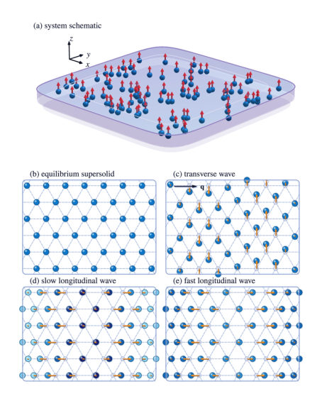
<figcaption class="paper-figure-caption"><b>Fig 1.</b> FIG. 1. Schematic of the system and its acoustic modes. (a) A dipo- lar Bose gas confined to a planar geometry, with the dipoles polarized along the harmonically confined z direction. (b) An unperturbed tri- angular supersolid. (c)–(e) Schematics of the transverse, and two longitudinal acoustic modes. The arrows show the lattice displace- ment, while the site colour indicates the relative atom number at each site.</figcaption>
</figure>
<figure class="paper-figure-card">
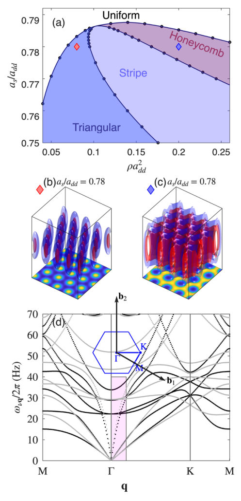
<figcaption class="paper-figure-caption"><b>Fig 2.</b> FIG. 2. Phase diagram, ground states and band structure for a planar dipolar BEC. (a) Phase diagram showing the regions where the uniform superfluid, stripe crystal, triangular crystal and hon- eycomb crystal are the ground states. Examples of (b) triangular [ρa2 dd = 0.08] and (c) honeycomb [ρa2 dd = 0.2] ground states. The plot box is of size 20×20 ×28 µm and the red (blue) isosurfaces are at a density of 3 × 1020 m−3 (1.5 × 1020 m−3). A column den- sity is given on the base plane. (d) Band structure of the triangular (black dots) and honeycomb (grey dots) supersolids corresponding to (b) and (c), respectively. Band structure shown along special di- rections of the first Brillouin zone,...</figcaption>
</figure>
<figure class="paper-figure-card">
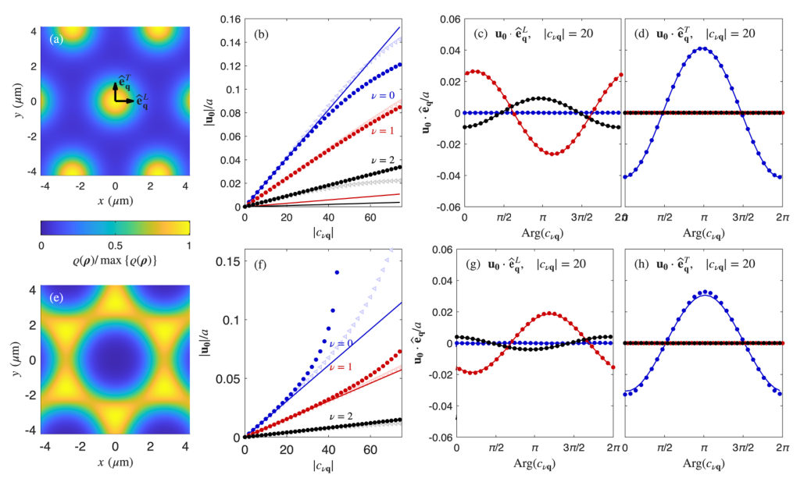
<figcaption class="paper-figure-caption"><b>Fig 3.</b> FIG. 3. Lattice site displacement for triangular (a)-(d) and honeycomb (e)-(h) supersolids caused by adding an excitation from the ν = 0, 1, 2 bands with a quasimomentun along x. (a), (e) show the unperturbed triangular and honeycomb areal densities ϱ0(ρ) and in (a) the longitudinal and transverse unit vectors are shown for reference. (b), (f) show the magnitude of the displacement of the site as a function of the quasiparticle amplitude. (c), (g) longitudinal and (d), (h) transverse displacement as a function of the phase of the quasiparticle. Results in (b)-(d), (f)-(h) are coloured according to the band as labelled in (b) and (f). Displacements computed from the first order expression...</figcaption>
</figure>
<figure class="paper-figure-card">
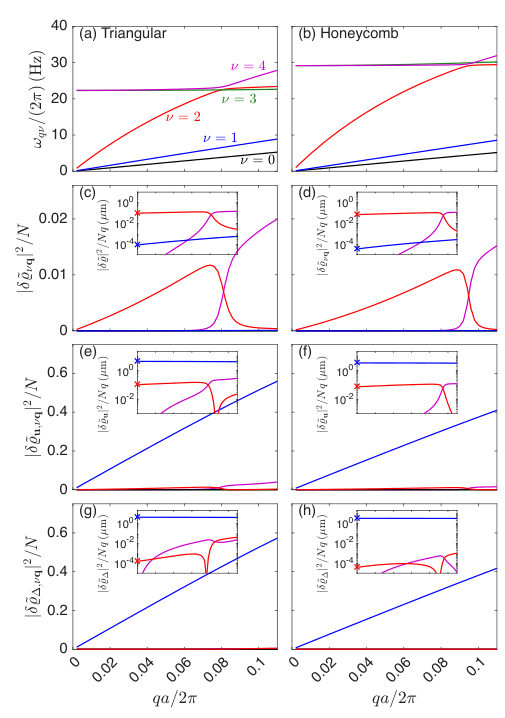
<figcaption class="paper-figure-caption"><b>Fig 4.</b> FIG. 4. Density fluctuations for triangular (left column) and hon- eycomb (right column) states. (a), (b) Excitation spectrum show- ing lowest 5 bands. (c), (d) Total density fluctuation δ˜ϱνq [from Eq. (13)]. (e), (f) strain density fluctuation δ˜ϱu,νq [from Eq. (28)] , and (g), (h) defect density fluctuation δ˜ϱ∆,νq [from Eq. (29)]. Insets to (c)-(h) show the fluctuation scaled by wave vector with the crosses indicating the hydrodynamic theory asymptotes. Both states are at as/add = 0.780 with a density of ρ = 0.08/a2 dd (ρ = 0.20/a2 dd) for the triangular (honeycomb) case. The lattice constant is a = 4.93 µm (a = 5.38 µm) for the triangular (honeycomb) case.</figcaption>
</figure>
<figure class="paper-figure-card">
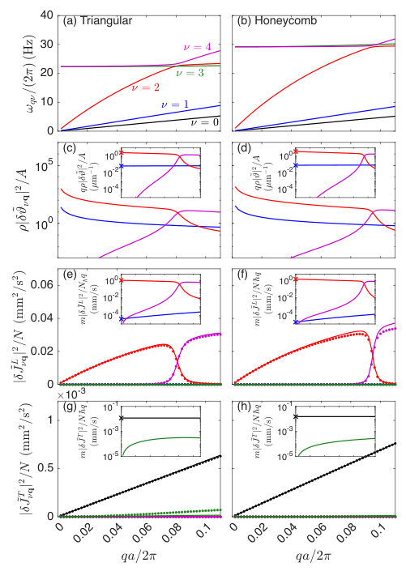
<figcaption class="paper-figure-caption"><b>Fig 5.</b> FIG. 5. Phase and current fluctuations for triangular (left column) and honeycomb (right column) states. (a), (b) Excitation spectrum showing lowest 5 bands. (c), (d) Phase fluctuations δ ˜ϑνq [from Eq. (14)]. (e), (f) longitudinal current fluctuations δ ˜JL νq and (g), (h) transverse current fluctuations δ ˜JT νq [from Eq. (15)]. Insets to (c)-(h) show the fluctuation scaled by wave vector with the crosses indicate the hydrodynamic theory asymptotes. The dots in (e) - (h) test the applicability of Eqs. (32) and (33) [see text]. The states analyzed are the same as in Fig. 4.</figcaption>
</figure>
</div>

<p><strong>Summary.</strong> This theoretical paper analyzes sound wave excitations in 2D dipolar supersolids using Bogoliubov-de Gennes theory. It decomposes density fluctuations into contributions from crystal strain and particle transport, identifying three distinct acoustic modes. The results confirm that the microscopic quantum description correctly reproduces macroscopic hydrodynamic predictions based on elastic constants.</p>
<p><strong>Why it may be interesting.</strong> This work provides a detailed microscopic link between the quantum excitation spectrum (BdG) and macroscopic continuum properties (elasticity/hydrodynamics) in exotic quantum matter like supersolids, which is highly relevant to modern AMO research.</p>
<details>
<summary>Detailed structure</summary>
<p><strong>Main problem.</strong> The study investigates the microscopic structure of long-wavelength acoustic excitations in two-dimensional dipolar supersolids.</p>
<p><strong>Main result.</strong> The analysis successfully connects Bogoliubov excitation modes to measurable crystalline and superfluid degrees of freedom, showing that fluctuation amplitudes match hydrodynamic theory based on elastic coefficients.</p>
<p><strong>Method.</strong> Bogoliubov–de Gennes (BdG) calculations are used to determine quasiparticle excitations, followed by developing a procedure to extract the lattice displacement field from density perturbations.</p>
<p><strong>Model / system.</strong> The system is modeled as a two-dimensional dipolar Bose-Einstein condensate exhibiting crystalline order (triangular or honeycomb). The dynamics are analyzed using linearizations of the extended Gross–Pitaevskii equation.</p>
<p><strong>Key observables.</strong> Density ($\varrho$), phase ($\vartheta$), current ($J$), and lattice displacement fluctuations associated with three acoustic modes (one transverse, two longitudinal).</p>
<p><strong>Important parameters / regimes.</strong> Long-wavelength limit ($|q|a \ll 1$); zero temperature; elastic coefficients of the supersolid.</p>
<p><strong>Assumptions / limitations.</strong> The analysis assumes a uniform planar geometry and focuses on small distortions relative to the lattice constant.</p>
<p><strong>Figures summary.</strong> Figures illustrate schematics of the three acoustic modes, phase diagrams showing triangular/honeycomb states, and spectra detailing density, strain, and defect density fluctuations for different excitation bands.</p>
<p><strong>Paper structure.</strong> The paper progresses from defining the physical system and governing equations (eGPE/BdG) to analyzing specific fluctuation components ($\delta	ilde{
ho}, \delta	ilde{
ho}_u, \delta	ilde{
ho}_\Delta$) for each acoustic mode, culminating in comparisons with established hydrodynamic sum rules.</p>
</details>
<details>
<summary>Abstract</summary>
<p>We investigate the microscopic structure of the long-wavelength acoustic excitations of two-dimensional dipolar supersolids with triangular and honeycomb crystal order. Using Bogoliubov--de Gennes calculations, we determine the density, phase, current, and lattice-displacement fluctuations associated with the three acoustic modes. We develop a procedure to extract the lattice displacement directly from the microscopic density perturbation, allowing the modes to be identified as one transverse and two longitudinal branches. The displacement field further separates the density fluctuations into contributions from crystal strain and particle transport relative to the lattice. This reveals that the lower longitudinal mode can have large strain and defect-density fluctuations that substantially cancel in the total density response. We show that the long-wavelength fluctuation amplitudes agree with hydrodynamic theory, which is specified entirely by the elastic coefficients of the supersolid. Our analysis provides a microscopic connection between Bogoliubov excitations and the crystalline and superfluid degrees of freedom of two-dimensional supersolids, and identifies their signatures in density- and current-sensitive probes.</p>
</details>
<p><sub><a href="#top">↑ back to top</a></sub></p>

<p><a id="paper-2608.07306"></a></p>
<h3 id="flip-chip-integrated-superconducting-qubits-using-electroplated-bump-bonds"><a href="http://arxiv.org/abs/2608.07306v1">Flip-chip integrated superconducting qubits using electroplated bump bonds</a></h3>
<p><strong>Authors:</strong> Yen-An Shih, Rebecca Gharibaan, Barka Khan, Dhananjay Joshi, Siddharth Singh, Martijn F. S. Zwanenburg, Eugene Y. Huang, Nataliia Zhurbina, Figen Yilmaz, Lukas Johannes Splitthoff, Srijit Goswami, Christian Kraglund Andersen<br>
<strong>Type:</strong> experiment · <strong>Category:</strong> quantum information and computing · <strong>PDF:</strong> <a href="https://arxiv.org/pdf/2608.07306v1">https://arxiv.org/pdf/2608.07306v1</a><br>
<strong>Analysis basis:</strong> full PDF text, analyzed in chunks
<strong>Topic relevance:</strong> 🔥 <code>QC/QI experiment</code> <strong>4/5</strong></p>
<div class="figure-strip-hint">↔ Scroll figures horizontally</div>
<div class="paper-figures-scroll">
<figure class="paper-figure-card">
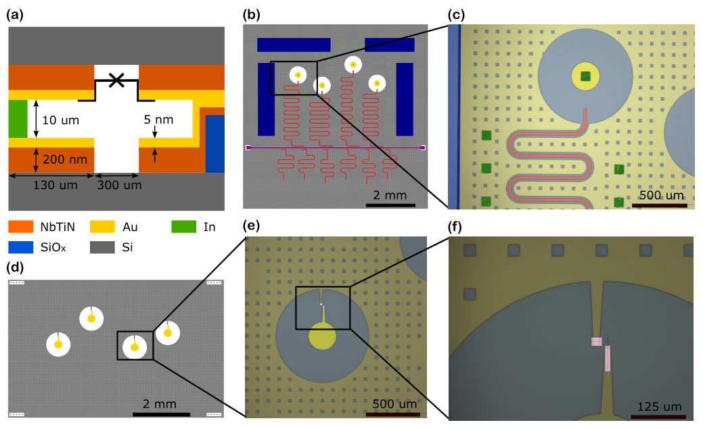
<figcaption class="paper-figure-caption"><b>Fig 1.</b> FIG. 1. Flip-transmon architecture: (a) Cross section of a flip-transmon. The left side is the charge island, which contains an indium bump (green) maintaining the superconducting galvanic connection between the top and bottom islands. The right side is the ground, which has a SiOx hardstop to ensure 10 µm interchip distance. (b) Overview of the bottom chip design, which contains four charge islands (yellow), four readout resonators and 6 flag resonators (red), one transmission line (purple), four SiOx hardstops (blue), and indium bumps across the ground plane and charge islands (green). (c) Optical image of the bottom chip showing a close-up of the annotated region in (b). (d) Overview of...</figcaption>
</figure>
<figure class="paper-figure-card">
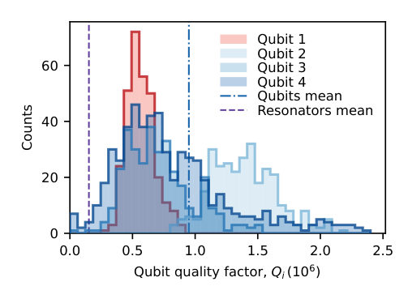
<figcaption class="paper-figure-caption"><b>Fig 2.</b> FIG. 2. Measurement of flip-transmons. Distribution of the measured internal quality factors for four flip-transmons over a period of approximately 20 hours. Qubit 1 belongs to a different chip than Qubits 2, 3, and 4. The two chips have identical designs and were fabricated in the same processing run. The blue dashed-dot line indicates the mean internal quality factor of the four qubits. The purple dashed line in- dicates the mean internal quality factor of the resonators lo- cated on the same chip as Qubits 2, 3, and 4, corresponding to the lower-half structures shown in Fig. 1(b).</figcaption>
</figure>
<figure class="paper-figure-card">
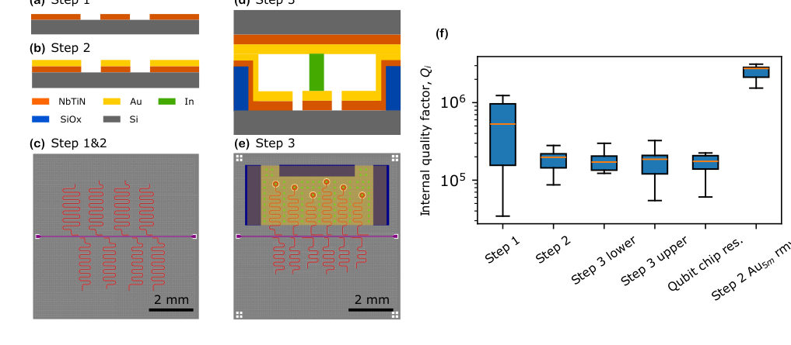
<figcaption class="paper-figure-caption"><b>Fig 3.</b> FIG. 3. Resonator measurements for loss analysis. (a) Cross section of resonators fabricated through Step 1, consisting of 200 nm NbTiN deposited on a high-resistivity silicon substrate and patterned by RIE. (b) Cross section of resonators fabricated through Step 2, which includes an additional 5 nm ex-situ Au film deposited on top of the NbTiN. (c) Layout of the CPW resonators used for the Step 1 and Step 2 measurements. (d) Cross section of resonators fabricated through Step 3. Additional processing includes deposition and patterning of SiOx hard stops, electroplated indium bumps, and bonding to a blank top chip. (e) Layout of the resonators used for the Step 3 measurements. The lower...</figcaption>
</figure>
<figure class="paper-figure-card">
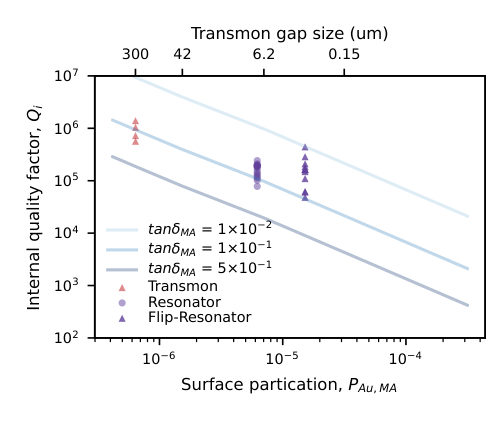
<figcaption class="paper-figure-caption"><b>Fig 4.</b> FIG. 4. Loss analysis. Internal quality factor as a function of the simulated surface participation ratio of the metal-air (MA) interface where there is gold encapsulation for the Au- capped resonators from Step 2, the bump-bond grounded res- onators from Step 3 that are covered with the top chip, and for flip-transmons in Fig. 1. The solid lines show the simulated relationship between Qi and the MA surface participation ra- tio for a fixed-Ec flip-transmon with varying island diameter and island-to-ground gap, with the gap indicated on the up- per x-axis.</figcaption>
</figure>
<figure class="paper-figure-card">
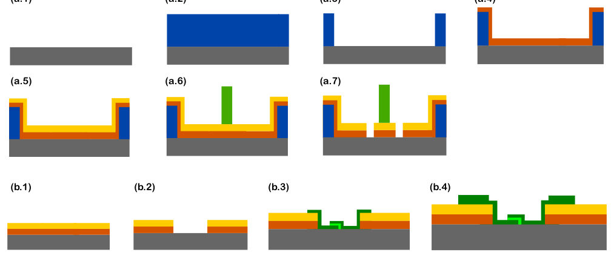
<figcaption class="paper-figure-caption"><b>Fig 5.</b> FIG. 5. Fabrication flow of the flip-transmon device. (a.1)–(a.7) Bottom chip fabrication process. (a.1) Starting high- resistivity Si wafer and cleaning steps. (a.2) Deposition of the SiOx hard stops. (a.3) Patterning of the SiOx hard stops. (a.4) NbTiN deposition. (a.5) Ex-situ Au deposition. (a.6) Indium bump electroplating. (a.7) NbTiN and Au etching. (b.1)–(b.4) Top chip fabrication process. (b.1) NbTiN and Au deposition on a cleaned Si wafer. (b.2) Patterned Au and NbTiN layers. (b.3) Fabrication of (Al/AlOx/Al) Josephson junctions. (b.4) Aluminum patches.</figcaption>
</figure>
</div>

<p><strong>Summary.</strong> This paper presents a method for building scalable superconducting quantum processors using flip-chip integration via electroplated indium bumps. By characterizing the qubit coherence and systematically analyzing loss sources across different fabrication steps, the authors demonstrate compatibility with high-coherence circuits while identifying surface losses at the gold interface as the main limitation.</p>
<p><strong>Why it may be interesting.</strong> The work directly addresses scalability challenges in superconducting quantum computing by providing a robust, high-coherence integration technique compatible with advanced 3D packaging methods.</p>
<details>
<summary>Detailed structure</summary>
<p><strong>Main problem.</strong> Developing a scalable, high-coherence platform for superconducting quantum processors by integrating distinct material platforms using flip-chip bonding.</p>
<p><strong>Main result.</strong> The electroplated indium bump bond technology is compatible with high-coherence circuits, achieving qubit quality factors around $10^6$. The primary loss mechanism identified is surface loss associated with the gold layer used for electrical contact.</p>
<p><strong>Method.</strong> Fabrication and characterization of transmon qubits using a three-dimensional flip-chip architecture bonded via electroplated indium bumps. Loss mechanisms were systematically studied by comparing qubit lifetimes to resonator quality factors under controlled process variations.</p>
<p><strong>Model / system.</strong> The system is a 3D transmon circuit utilizing two substrates connected by electroplated indium bumps. The design aims to share the electric field across both substrates, minimizing sensitivity to interface losses.</p>
<p><strong>Key observables.</strong> Qubit quality factor ($Q_i$), $T_1$ relaxation time, and resonator quality factors measured under varying magnetic fields and process steps.</p>
<p><strong>Important parameters / regimes.</strong> Achieved $Q_i \approx 10^6$; dominant loss tangent ($  an \delta_{ ext{MA}}$) associated with the Au-covered metal-air interface.</p>
<p><strong>Assumptions / limitations.</strong> The analysis assumes that surface losses at the gold/metal-air interface are the primary limiting factor, and that field sharing across substrates is effective for coherence preservation.</p>
<p><strong>Figures summary.</strong> Figures illustrate the flip-transmon cross-section, measurement distributions of internal quality factors over time, and plots comparing $Q_i$ vs. simulated energy participation ratios ($  ext{PAu,MA}$) to confirm loss sources.</p>
<p><strong>Paper structure.</strong> The paper first introduces the 3D transmon architecture using electroplated indium. It then systematically measures qubit coherence ($T_1$) and compares these results with resonator measurements across controlled process variations (e.g., presence/absence of Au film) to pinpoint the dominant loss mechanism, concluding that surface losses govern performance.</p>
</details>
<details>
<summary>Abstract</summary>
<p>Flip-chip integration offers a promising route toward scalable superconducting quantum processors and hybrid semiconductor-superconductor quantum devices. We develop a three-dimensional transmon architecture using electroplated indium in which the qubit electric field is shared nearly equally between two bump-bonded substrates while maintaining low participation at the indium-bump interface. The resulting geometry is well suited for future hybrid qubits, enabling the integration of distinct material platforms while minimizing sensitivity to bump-interface loss. Using this platform, we evaluate electroplated indium interconnects for superconducting quantum circuits. Flip-chip transmons incorporating electroplated indium bumps exhibit qubit quality factors around $10^6$. In addition, a systematic study of coplanar-waveguide resonators is used to identify losses associated with the electroplating process. In particular, we find that surface losses associated with the gold-layer, used to enable good electric contact with the indium, is likely the primary contributor to the qubit decay rate. These results demonstrate the compatibility of electroplated indium technology with high-coherence superconducting circuits and establish a promising platform for three-dimensional hybrid quantum integration.</p>
</details>
<p><sub><a href="#top">↑ back to top</a></sub></p>

<p><a id="paper-2608.07145"></a></p>
<h3 id="from-triangles-to-prisms-towards-a-geometric-extension-of-concurrence-fill-for-three-qubit-mixed-states"><a href="http://arxiv.org/abs/2608.07145v1">From triangles to prisms: towards a geometric extension of concurrence fill for three-qubit mixed states</a></h3>
<p><strong>Authors:</strong> Divyanshu K. Verma, Girish Kulkarni<br>
<strong>Type:</strong> theory · <strong>Category:</strong> quantum information and computing · <strong>PDF:</strong> <a href="https://arxiv.org/pdf/2608.07145v1">https://arxiv.org/pdf/2608.07145v1</a><br>
<strong>Analysis basis:</strong> full PDF text, analyzed in chunks
<strong>Topic relevance:</strong> 🔥 <code>entanglement &amp; information structure</code> <strong>4/5</strong></p>
<div class="figure-strip-hint">↔ Scroll figures horizontally</div>
<div class="paper-figures-scroll">
<figure class="paper-figure-card">
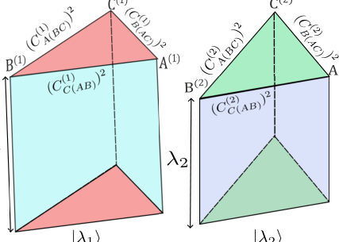
<figcaption class="paper-figure-caption"><b>Fig 1.</b> FIG. 1: Eigenprisms: Concurrence prisms associated with the eigendecomposition.</figcaption>
</figure>
<figure class="paper-figure-card">
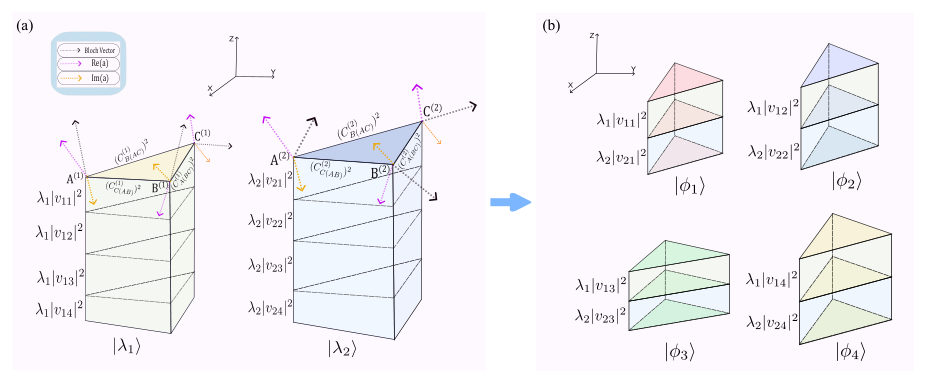
<figcaption class="paper-figure-caption"><b>Fig 2.</b> FIG. 2: Schematic depiction of the geometrical procedure connecting the eigenprisms to the general prisms.</figcaption>
</figure>
<figure class="paper-figure-card">
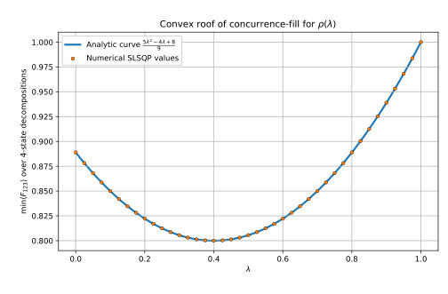
<figcaption class="paper-figure-caption"><b>Fig 3.</b> FIG. 3: Concurrence fill of rank-2 mixtures of the form ρ(λ) = λ |GHZ⟩⟨GHZ| + (1 −λ) |W⟩⟨W| with respect to the parameter λ.</figcaption>
</figure>
<figure class="paper-figure-card">
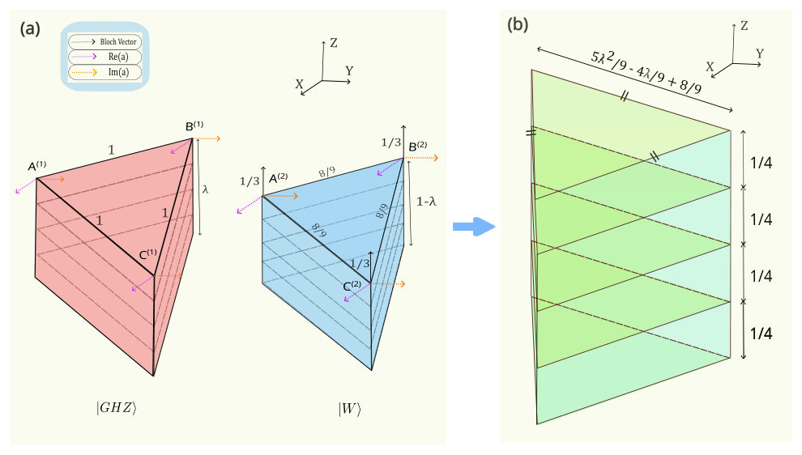
<figcaption class="paper-figure-caption"><b>Fig 4.</b> FIG. 4: (a) The eigenprisms for the GHZ-W mixture with heights λ and (1 −λ) respectively. Following from the co-isometry V minimizing the total prism fill area of the general prisms, each transverse section is divided equally. (b) The identical general prisms obtained following the procedure described in Sec. III.</figcaption>
</figure>
</div>

<p><strong>Summary.</strong> This paper develops a geometric framework—the concurrence prism—to extend the measure of genuine tripartite entanglement (concurrence fill) from pure to mixed three-qubit states. By applying this formalism to mixtures of GHZ and W states, the authors derive an exact closed-form expression for the entanglement measure, providing both theoretical results and powerful visualization tools.</p>
<p><strong>Why it may be interesting.</strong> This work provides advanced tools for quantifying multipartite entanglement in realistic, mixed quantum systems, which is crucial for understanding decoherence effects in quantum computation protocols.</p>
<details>
<summary>Detailed structure</summary>
<p><strong>Main problem.</strong> The primary goal is extending entanglement measures, specifically the concurrence fill, from three-qubit pure states to general mixed states.</p>
<p><strong>Main result.</strong> The authors derived a closed-form expression for the concurrence fill of rank-2 mixtures of GHZ and W states, showing it depends on the mixing parameter $\lambda$ as $F(\lambda) = (5\lambda^2 - 4\lambda + 8)/9$.</p>
<p><strong>Method.</strong> The study employs the convex-roof extension formalism, interpreting the optimization problem geometrically by minimizing the total 'prism fill area' over all pure state decompositions.</p>
<p><strong>Model / system.</strong> The system under investigation is three-qubit quantum states ($
ho$), with a specific focus on rank-2 mixed states formed as mixtures of GHZ and W states.</p>
<p><strong>Key observables.</strong> Concurrence fill ($F_{ABC}$), Concurrence Triangle area, Total Prism Fill Area, Reduced density matrices for subsystems.</p>
<p><strong>Important parameters / regimes.</strong> The mixing parameter $\lambda \in [0, 1]$ governing the mixture between GHZ and W states.</p>
<p><strong>Assumptions / limitations.</strong> The analysis is restricted to rank-2 mixed states; the geometric interpretation relies on relating general decompositions to eigen-decompositions.</p>
<p><strong>Figures summary.</strong> Figures illustrate the geometric connection between 'eigenprisms' (from eigendecomposition) and general prisms, showing the concurrence fill vs. $\lambda$ for the GHZ-W mixture, and visualizing the resulting prism structures.</p>
<p><strong>Paper structure.</strong> The paper first establishes the theoretical framework by generalizing the concurrence triangle to a 'concurrence prism' for mixed states. It then applies this formalism to rank-2 mixtures of specific entangled states (GHZ and W) to derive closed-form expressions and provide geometric visualizations.</p>
</details>
<details>
<summary>Abstract</summary>
<p>The quantification of multipartite entanglement remains a long-standing open challenge in quantum information theory with major implications for quantum foundations and quantum technologies. In the context of three-qubit pure states, the concurrence triangle underlies geometric interpretations for a variety of multipartite entanglement measures. In particular, the concurrence fill, which is proportional to the square root of the area of the concurrence triangle, has been shown to be a valid measure of genuine tripartite entanglement. As a result, there is now significant interest in extending the concurrence triangle and concurrence fill to three-qubit mixed states. In this work, we show that any rank-2 three-qubit mixed state can be visualized in terms of concurrence prisms associated with their pure state decompositions. Thus, the concurrence fill of the mixed state obtained through convex-roof extension is proportional to the total prism fill area, defined as the square root of the base area times the height, associated with the prisms minimized over all pure state decompositions. We then consider three-qubit mixed states that are incoherent mixtures of Greenberger-Horne-Zeilinger (GHZ) and W states and analytically perform their convex-roof extension to obtain a closed-form expression for the concurrence fill of these rank-2 mixtures. Finally, we apply the geometric picture of concurrence prisms to these mixtures and their pure state decomposition corresponding to minimum concurrence fill as a tool for visualization.</p>
</details>
<p><sub><a href="#top">↑ back to top</a></sub></p>

<p><a id="paper-2608.07245"></a></p>
<h3 id="consequences-of-a-dynamical-no-signaling-condition-for-classical-quantum-interactions"><a href="http://arxiv.org/abs/2608.07245v1">Consequences of a dynamical no-signaling condition for classical-quantum interactions</a></h3>
<p><strong>Authors:</strong> S. Camalet<br>
<strong>Type:</strong> theory · <strong>Category:</strong> other · <strong>PDF:</strong> <a href="https://arxiv.org/pdf/2608.07245v1">https://arxiv.org/pdf/2608.07245v1</a><br>
<strong>Analysis basis:</strong> full PDF text, analyzed in chunks
<strong>Topic relevance:</strong> <code>entanglement &amp; information structure</code> <strong>3/5</strong> · <code>measurement-induced transitions</code> <strong>3/5</strong> · <code>methods for driven-dissipative</code> <strong>3/5</strong> · <code>quantum measurements</code> <strong>3/5</strong> · <code>Keldysh / 2PI / non-Gaussian methods</code> <strong>2/5</strong> · <code>correlated / nonlocal dissipation</code> <strong>2/5</strong> · <code>driven-dissipative phase transition</code> <strong>2/5</strong> · <code>non-equilibrium dynamics</code> <strong>2/5</strong> · <code>analog quantum simulation</code> <strong>1/5</strong> · <code>correlated cavity matter</code> <strong>1/5</strong> · <code>non-equilibrium universality</code> <strong>1/5</strong></p>
<div class="figure-strip-hint">↔ Scroll figures horizontally</div>
<div class="paper-figures-scroll">
<figure class="paper-figure-card">
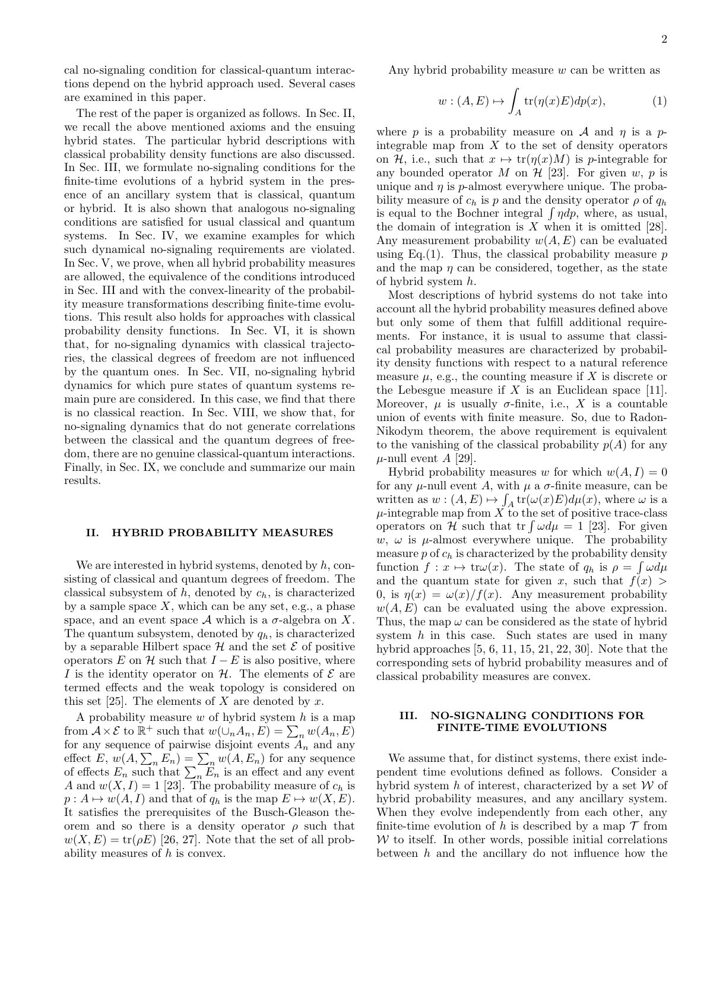
<figcaption class="paper-figure-caption"><b>Fig 1.</b> Low-resolution page preview, page 2</figcaption>
</figure>
<figure class="paper-figure-card">
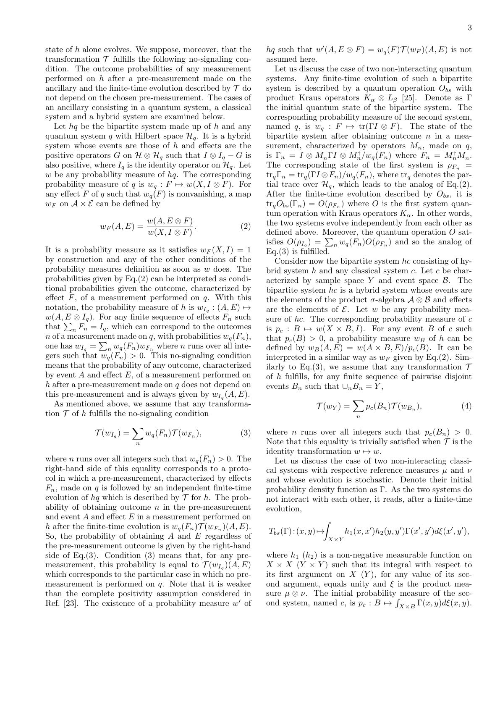
<figcaption class="paper-figure-caption"><b>Fig 2.</b> Low-resolution page preview, page 3</figcaption>
</figure>
<figure class="paper-figure-card">
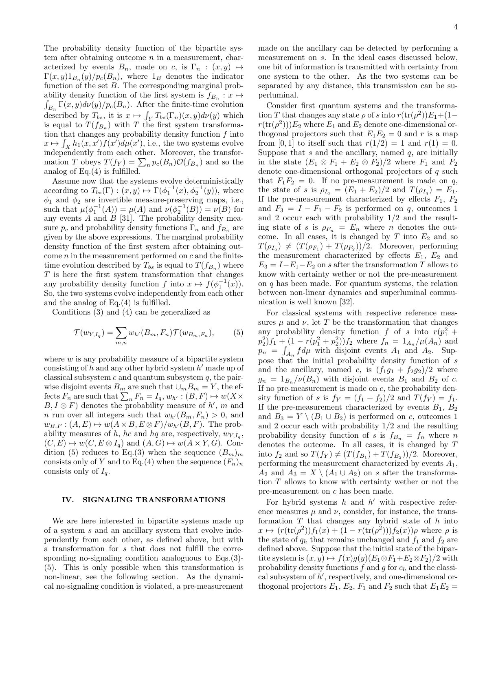
<figcaption class="paper-figure-caption"><b>Fig 3.</b> Low-resolution page preview, page 4</figcaption>
</figure>
<figure class="paper-figure-card">
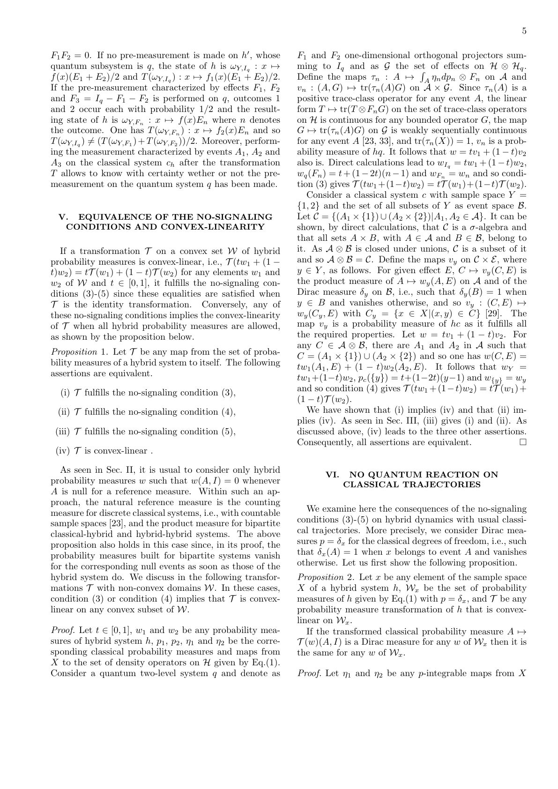
<figcaption class="paper-figure-caption"><b>Fig 4.</b> Low-resolution page preview, page 5</figcaption>
</figure>
<figure class="paper-figure-card">
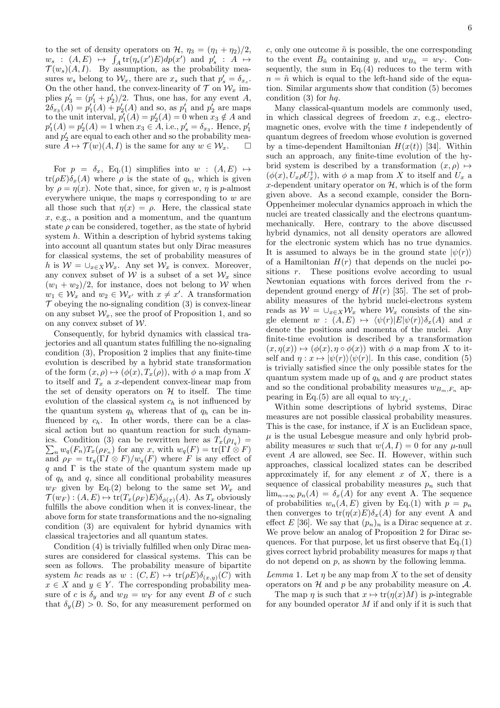
<figcaption class="paper-figure-caption"><b>Fig 5.</b> Low-resolution page preview, page 6</figcaption>
</figure>
</div>

<p><strong>Summary.</strong> This paper rigorously extends the no-signaling principle to describe dynamical interactions between classical and quantum subsystems. It shows that maintaining this causality constraint forces the underlying evolution dynamics to be mathematically equivalent to convex-linear transformations. This has profound implications, restricting genuine non-trivial classical-quantum coupling in time evolution.</p>
<p><strong>Why it may be interesting.</strong> This work provides fundamental constraints on how classical information can interact with quantum mechanics in a time-evolution setting, which is crucial for understanding open quantum systems modeling where classical parameters might govern environmental coupling or measurement outcomes.</p>
<details>
<summary>Detailed structure</summary>
<p><strong>Main problem.</strong> The paper develops a dynamical generalization of the no-signaling condition specifically for hybrid systems involving classical and quantum degrees of freedom.</p>
<p><strong>Main result.</strong> The dynamical no-signaling condition imposes strong constraints on classical-quantum interactions, implying that such interactions must be described by convex-linear transformations equivalent to non-interacting dynamics in certain limits.</p>
<p><strong>Method.</strong> The analysis involves formulating probability measures for hybrid states and testing the independence of outcome probabilities from ancillary measurements under time evolution operators T. Mathematical tools include information theory (mutual information) and analyzing linear/convex-linear maps.</p>
<p><strong>Model / system.</strong> The system studied is a general hybrid model composed of classical degrees of freedom (defined by a sample space X) coupled to quantum degrees of freedom (described by a Hilbert space H). The dynamics are governed by finite-time evolution operators T acting on the joint probability measure.</p>
<p><strong>Key observables.</strong> Outcome probabilities of measurements performed after ancillary pre-measurements; classical-quantum mutual information I(omega); and entanglement measures.</p>
<p><strong>Important parameters / regimes.</strong> The nature of the hybrid state (pure vs. mixed), the type of evolution T (linear vs. non-linear), and whether all possible hybrid states are allowed.</p>
<p><strong>Assumptions / limitations.</strong> The analysis builds upon prior work defining probability measures for hybrid systems and assumes that deviations from no-signaling require non-linear transformations T.</p>
<p><strong>Figures summary.</strong> Not specified in the notes, but the structure suggests mathematical derivations proving inequalities related to information loss under evolution.</p>
<p><strong>Paper structure.</strong> The paper first establishes the general framework of hybrid systems and the initial no-signaling condition. It then generalizes this concept dynamically for finite-time evolutions, deriving consequences regarding the directionality (classical influencing quantum but not vice versa) and ultimately proving equivalence to convex-linearity when all states are considered.</p>
</details>
<details>
<summary>Abstract</summary>
<p>Hybrid classical-quantum approaches are instrumental in numerous fields, from condensed matter physics to quantum information science. We recently proposed to describe hybrid systems starting from a set of natural axioms for measurement probabilities without adding any underlying mathematical structure. The so defined probability measures fulfill a no-signaling condition that ensures that instantaneous communication is impossible. We formulate here a dynamical generalization of this condition. It means that, for two independent systems, the outcome probabilities of a measurement made on one of them are not affected by a measurement performed earlier on the other. Analogous requirements are satisfied for usual classical and quantum bipartite systems and violating them would make faster-than-light signaling possible. The dynamical no-signaling condition has important consequences for classical-quantum interactions that depend on the hybrid approach used. For no-signaling hybrid dynamics with classical trajectories, the classical degrees of freedom can influence the quantum ones but the latter cannot react on the former. If pure states of quantum systems remain pure then the dynamical no-signaling condition implies the absence of classical reaction. When all hybrid states are allowed, there are no genuine classical-quantum interactions for no-signaling hybrid dynamics that do not generate correlations between the classical and the quantum degrees of freedom. In all these cases, the proposed condition is equivalent to the convex-linearity of the probability measure transformations describing finite-time evolutions.</p>
</details>
<p><sub><a href="#top">↑ back to top</a></sub></p>

<p><a id="paper-2608.07205"></a></p>
<h3 id="atomic-correlation-effects-in-collapse-induced-spontaneous-radiation"><a href="http://arxiv.org/abs/2608.07205v1">Atomic correlation effects in collapse-induced spontaneous radiation</a></h3>
<p><strong>Authors:</strong> Simone Manti, Nicola Bortolotti, Lajos Diósi, Kristian Piscicchia, Catalina Curceanu<br>
<strong>Type:</strong> theory · <strong>Category:</strong> other · <strong>PDF:</strong> <a href="https://arxiv.org/pdf/2608.07205v1">https://arxiv.org/pdf/2608.07205v1</a><br>
<strong>Analysis basis:</strong> full PDF text, analyzed in chunks
<strong>Topic relevance:</strong> <code>Keldysh / 2PI / non-Gaussian methods</code> <strong>3/5</strong> · <code>correlated / nonlocal dissipation</code> <strong>3/5</strong> · <code>methods for driven-dissipative</code> <strong>3/5</strong> · <code>Dicke superradiance</code> <strong>2/5</strong> · <code>driven-dissipative phase transition</code> <strong>2/5</strong> · <code>non-equilibrium dynamics</code> <strong>2/5</strong> · <code>free-space correlated emission</code> <strong>1/5</strong> · <code>non-equilibrium universality</code> <strong>1/5</strong> · <code>quantum measurements</code> <strong>1/5</strong> · <code>superradiant laser</code> <strong>1/5</strong></p>
<div class="figure-strip-hint">↔ Scroll figures horizontally</div>
<div class="paper-figures-scroll">
<figure class="paper-figure-card">
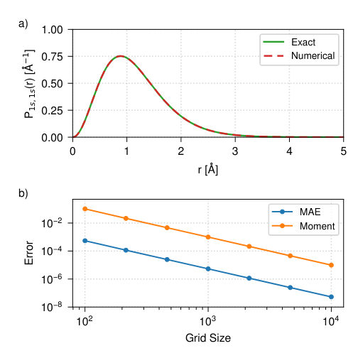
<figcaption class="paper-figure-caption"><b>Fig 1.</b> Figure 1. Electron radial distribution function (a) for two 1s electrons using a hydrogenic wavefunction, used to benchmark the implementation against analytical solutions with a grid size of 104 (left). A scan (b) over the grid size is shown on the right, reporting the Mean Absolute Error (MAE) in blue and the first moment in orange, which converges to the analytical value of 35/16 a.u..</figcaption>
</figure>
<figure class="paper-figure-card">
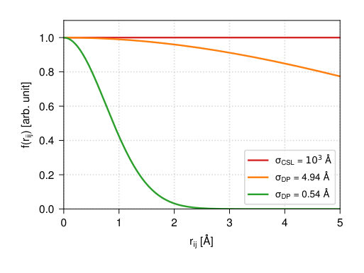
<figcaption class="paper-figure-caption"><b>Fig 2.</b> Figure 3. Modulation function f(rij) as a function of the emitters distance rij for DP model, with values σDP = 0.54 ˚A [24] (green) and σDP = 4.94 ˚A [42] (orange), and CSL with σCSL = 103 ˚A [22] (red).</figcaption>
</figure>
<figure class="paper-figure-card">
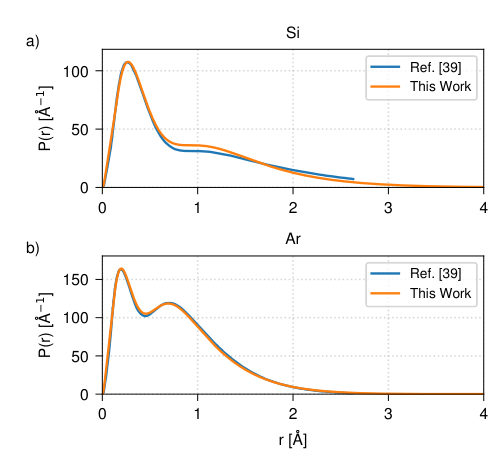
<figcaption class="paper-figure-caption"><b>Fig 3.</b> Figure 2. Comparison between the implemented electron- electron RDFs (orange) and reference [39] (blue) for silicon (a) and argon (b).</figcaption>
</figure>
<figure class="paper-figure-card">
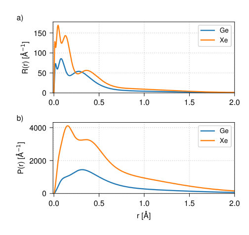
<figcaption class="paper-figure-caption"><b>Fig 4.</b> Figure 4. Nuclear-electron R(r) (a) and electron-electron P(r) (b) RDFs for Ge (blue) and Xe (orange) as functions of the interparticle distance r.</figcaption>
</figure>
<figure class="paper-figure-card">
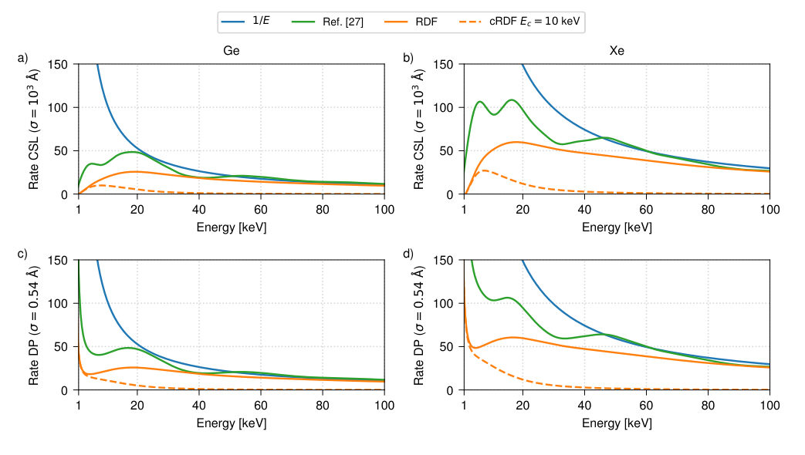
<figcaption class="paper-figure-caption"><b>Fig 5.</b> Figure 5. Emission rates for Ge (a) and (c) and Xe (b) and (d) in the 1-100 keV range. The (a) and (b) panels show the RDF rate for CSL with σ = 103 ˚A and the (c) and (d) panels for DP σ = 0.54 ˚A. For each panel the RDF rate is compared to the 1/E behaviour, the approximation in Ref. [27] and colored-noise (cRDF) with a cutoff energy of Ec = 10 keV. All rates are shown in arbitrary units.</figcaption>
</figure>
</div>

<p><strong>Summary.</strong> This paper develops a rigorous theoretical framework to calculate spontaneous radiation rates induced by collapse models, incorporating detailed atomic structure effects through Radial Distribution Functions (RDFs). By applying this formalism to atoms like Germanium and Xenon, the authors demonstrate that different collapse mechanisms predict distinct, measurable spectral signatures at low energies. This provides a powerful tool for designing next-generation experiments to test fundamental physics beyond standard quantum mechanics.</p>
<p><strong>Why it may be interesting.</strong> This work bridges fundamental quantum gravity concepts (collapse models) with highly precise atomic structure calculations. The explicit incorporation of material-dependent effects via RDFs provides a concrete pathway for experimental testing in AMO physics.</p>
<details>
<summary>Detailed structure</summary>
<p><strong>Main problem.</strong> The paper investigates how atomic structure modifies the spontaneous radiation rate predicted by Spontaneous Collapse Models (SCMs). The goal is to use this modification to create material-dependent constraints on SCM parameters.</p>
<p><strong>Main result.</strong> By incorporating realistic radial distribution functions (RDFs), the derived emission rate shows distinct model dependencies for CSL and DP models, particularly exhibiting a vanishing rate limit at low energies ($E 	o 0$) for neutral atoms.</p>
<p><strong>Method.</strong> The authors derive a general expression for the spontaneous emission rate by calculating correlation functions of the radiation field, which are then expressed in terms of nuclear-electron and electron-electron RDFs.</p>
<p><strong>Model / system.</strong> The study analyzes charged particles (e.g., Ge, Xe) whose dynamics are modified by SCMs, governed by a master Lindblad equation incorporating stochastic noise fields. The calculation relies on semi-classical approximations for the radiation field.</p>
<p><strong>Key observables.</strong> Spontaneous emission rate ($   ext{d}\Gamma/   ext{d}\omega$ or $  ext{d}\Gamma/   ext{d}E$), and the modulation function $f(r_{ij})$ which distinguishes between CSL and DP models.</p>
<p><strong>Important parameters / regimes.</strong> Collapse strength ($\lambda$) and spatial resolution ($\sigma$) of the SCMs; low-energy regime where photon wavelength $\sim$ atomic dimensions (1–100 keV).</p>
<p><strong>Assumptions / limitations.</strong> The analysis uses a semi-classical approach valid above 1 keV, assumes spherical symmetry for angular integration, and initially approximates interatomic correlations as subleading corrections.</p>
<p><strong>Figures summary.</strong> Figures compare calculated RDFs ($P(r)$) for Si/Ar against literature; Figure 5 compares the predicted emission rates for Ge and Xe across different energy regimes for CSL vs. DP models, contrasting with simplified theoretical limits like $1/E$.</p>
<p><strong>Paper structure.</strong> The paper develops a general formalism for the emission rate using arbitrary noise correlations, derives the expression in terms of RDFs, applies this framework to specific atoms (Ge, Xe) under CSL and DP assumptions, and concludes by comparing results across energy regimes.</p>
</details>
<details>
<summary>Abstract</summary>
<p>Collapse models introduce stochastic and nonlinear modifications in the quantum dynamics, predicting observable effects, such as spontaneous radiation from charged particles, which can be used to constrain their parameters. Recently, attention has focused on the 1-100 keV energy range, where the wavelength of the emitted photons becomes comparable to atomic dimensions, making the emission sensitive to atomic structure and leading to model-dependent behaviors that enable their discrimination. Here, we derive a general expression for the spontaneous emission rate for arbitrary noise, providing a framework that systematically incorporates the atomic structure through the radial distribution of the emitters, modulated by the specific collapse model. The formalism recovers previous results in the appropriate limits and naturally includes new low-energy effects, such as cancellation mechanisms arising from charge correlations. We evaluate the rates for germanium and xenon within the Diósi-Penrose and Continuous Spontaneous Localization models, showing how these correlations modify the predicted emission rates. This approach provides a unified framework to account for atomic effects and enables more robust, material-dependent experimental constraints on collapse model parameters.</p>
</details>
<p><sub><a href="#top">↑ back to top</a></sub></p>

<p><a id="paper-2608.06683"></a></p>
<h3 id="high-performance-quantum-transduction-with-correlated-noise"><a href="http://arxiv.org/abs/2608.06683v1">High-Performance Quantum Transduction with Correlated Noise</a></h3>
<p><strong>Authors:</strong> Yu-Bo Hou, Xiaoan Ai, Pengbo Li, Changchun Zhong<br>
<strong>Type:</strong> theory · <strong>Category:</strong> quantum information and computing · <strong>PDF:</strong> <a href="https://arxiv.org/pdf/2608.06683v1">https://arxiv.org/pdf/2608.06683v1</a><br>
<strong>Analysis basis:</strong> full PDF text, analyzed in chunks
<strong>Topic relevance:</strong> <code>Keldysh / 2PI / non-Gaussian methods</code> <strong>3/5</strong> · <code>correlated / nonlocal dissipation</code> <strong>3/5</strong> · <code>methods for driven-dissipative</code> <strong>3/5</strong> · <code>driven-dissipative phase transition</code> <strong>2/5</strong> · <code>entanglement &amp; information structure</code> <strong>2/5</strong> · <code>Tavis-Cummings &amp; cavity-many-emitter</code> <strong>1/5</strong> · <code>analog quantum simulation</code> <strong>1/5</strong> · <code>correlated cavity matter</code> <strong>1/5</strong> · <code>non-equilibrium dynamics</code> <strong>1/5</strong> · <code>non-equilibrium universality</code> <strong>1/5</strong> · <code>spintronics-quantum-optics interface</code> <strong>1/5</strong></p>
<div class="figure-strip-hint">↔ Scroll figures horizontally</div>
<div class="paper-figures-scroll">
<figure class="paper-figure-card">

<figcaption class="paper-figure-caption"><b>Fig 1.</b> FIG. 1. (a) Schematic figure of an EOM system. (b) Illus- tration for the input-output relations with correlated bath noise between the microwave and mechanical modes. ˆa, ˆb and ˆc are denoted as the annihilation operators of the opti- cal, mechanical and microwave modes, respectively, with the corresponding resonant frequencies ωo, ωm and ωe. In plot (b), the black straight arrows and orange wavy arrows de- note the input and output fields associated with the coupling and intrinsic loss ports, respectively, whereas the red dashed double-headed arrows indicate correlations between the me- chanical and microwave noise fields.</figcaption>
</figure>
<figure class="paper-figure-card">

<figcaption class="paper-figure-caption"><b>Fig 2.</b> FIG. 2. Logarithmic negativity EN of the MO output state versus the electromechanical coupling phase ϕ under different degrees of noise correlation χ = {0, 0.7, 0.8, 0.9}. Here, we choose the frequency ωm = ωe = 10 GHz, and Com = Cem = 4 and ζo = ζe = 0.9 are used for both figures (a) and (b). The thermal noise is chosen as (a) nth = 0.6 and (b) nth = 1.6.</figcaption>
</figure>
<figure class="paper-figure-card">

<figcaption class="paper-figure-caption"><b>Fig 3.</b> FIG. 3. Effective added noise n′ e in panels (a) and (b) and quantum capacity lower bound QN ′ LB in panels (c) and (d) versus electromechanical coupling phase ϕ. The thermal noise is chosen as nth = 0.6 in (a) and (c), and nth = 1.6 in (b) and (d). The optimal gain constant κ was chosen for each parameter set. The other parameters are chosen to be the same as in Fig. 2.</figcaption>
</figure>
<figure class="paper-figure-card">

<figcaption class="paper-figure-caption"><b>Fig 4.</b> FIG. 4. Quantum capacity lower bound QN ′ LB versus system cooperativities Com and Cem in panels (a)-(c), and microwave extraction ratio ζe in panels (d) and (e). The white dashed line separates the stable region in the lower right from the unstable region in the upper left. The black solid curve, which marks η = 1/2, bounds the upper right parameter region in which DQT can potentially have a positive quantum capacity. The thermal noise is chosen as nth = 0.6 in (a) and (b), and nth = 1.6 in (c)–(e). The system cooperativities are chosen as Com = Cem = 4 in panel (d) with different degrees of correlation χ = {0, 0.7, 0.8, 0.9}, and χ is fixed to 0.9 in panel (e) with different...</figcaption>
</figure>
<figure class="paper-figure-card">

<figcaption class="paper-figure-caption"><b>Fig 5.</b> FIG. 5. Performance of direct quantum transduction. (a) Effective channel noise ne as a function of the coupling phase ϕ. (b) and (c) Distributions of ne as functions of the cooperativities Com and Cem for ϕ = 0 and ϕ = π/2, respectively, with the same local noise nb = 2.02 and nc = 2.29. At ϕ = 0 and π, the noise correlations make no contribution, whereas ϕ = π/2 gives the optimal destructive interference. (d) Quantum capacity lower bound QN LB in the same cooperativity space at ϕ = π/2. The black curve marks η = 1/2, separating the regime with zero quantum capacity for direct transduction in the lower left from the potentially positive capacity regime in the upper right. The white curve...</figcaption>
</figure>
</div>

<p><strong>Summary.</strong> This paper demonstrates that correlated noise can be actively utilized as a resource to overcome the thermal noise limitations plaguing quantum transduction between microwave and optical frequencies. By exploiting these correlations in both direct and entanglement-assisted protocols, the authors show significant improvements in channel fidelity and positive quantum capacity. This theoretical guidance suggests a pathway to realizing practical hybrid quantum networks with less stringent cryogenic requirements.</p>
<p><strong>Why it may be interesting.</strong> This work directly addresses fundamental bottlenecks in building practical quantum networks by transforming perceived noise sources into usable resources, which is highly relevant to open quantum systems theory and quantum optics.</p>
<details>
<summary>Detailed structure</summary>
<p><strong>Main problem.</strong> Quantum transduction, essential for hybrid quantum architectures, is fundamentally limited by thermal noise, which degrades state conversion fidelity.</p>
<p><strong>Main result.</strong> The authors show that exploiting correlated noise as a resource significantly suppresses effective channel noise in direct transduction and enhances entanglement generation in entanglement-based transduction. This allows both protocols to achieve positive quantum capacity over relevant experimental ranges.</p>
<p><strong>Method.</strong> The analysis uses the scattering picture framework applied to an electro-optomechanical system, modeling mode conversion via Gaussian processes and calculating quantum capacity bounds based on noise correlations.</p>
<p><strong>Model / system.</strong> The study models a hybrid transduction platform involving optical ($\hat{a}$), mechanical ($\hat{b}$), and microwave ($\hat{c}$) modes, described by an effective Hamiltonian and analyzed using input-output relations incorporating correlated bath noise.</p>
<p><strong>Key observables.</strong> Quantum Capacity ($Q_{N}^{LB}$), Logarithmic Negativity ($E_N$), Effective Channel Noise ($n_e$).</p>
<p><strong>Important parameters / regimes.</strong> Cooperativities ($C_{em}, C_{om}$), Transmissivity ($\eta$), Noise Correlation Parameter ($\chi$), Coupling Phase ($\phi$).</p>
<p><strong>Assumptions / limitations.</strong> The analysis treats the EOM device as a linear Gaussian processor and assumes that noise correlations, rather than independent thermal noise, are the key resource.</p>
<p><strong>Figures summary.</strong> Figure 1 illustrates the EOM system schematic and input-output relations with correlated bath noise. Figure 2 likely compares Logarithmic Negativity ($E_N$) versus coupling phase ($\phi$) under varying levels of noise correlation ($\chi$).</p>
<p><strong>Paper structure.</strong> The paper first establishes the limitations of quantum transduction due to thermal noise, then introduces exploiting correlated noise as a resource for both direct and entanglement-based protocols. It develops the theoretical framework using scattering relations and finally presents results showing performance enhancement and proposes mechanisms for engineering these correlations.</p>
</details>
<details>
<summary>Abstract</summary>
<p>Quantum transduction, which coherently converts quantum states between microwave and optical frequency domains, is a key technology for hybrid quantum architectures. Its performance, however, is fundamentally limited by thermal noise. Direct quantum transduction is particularly susceptible to noise and often fails to achieve positive quantum capacity. Entanglement-based quantum transduction, which realizes state conversion through quantum teleportation assisted by microwave-optical entanglement, is intrinsically more robust against thermal noise. However, generating sufficiently strong entanglement in a realistic thermal environment remains a major challenge. In this paper, we exploit correlated noise as a resource for quantum transduction. For direct quantum transduction, it is shown that the noise correlations give rise to controllable interference terms that substantially suppress the effective channel noise. For entanglement-based quantum transduction, the same correlations enhance the generation of microwave-optical entanglement, thereby improving the fidelity of teleportation-based conversion. As a result, both transduction protocols exhibit broad regions of positive quantum capacity over experimentally relevant ranges of cooperativity. We further discuss a possible physical mechanism for engineering the required noise correlations, providing theoretical guidance for experimental implementations. These results suggest that correlated noise can substantially relax the stringent cryogenic requirements for microwave-optical quantum transduction and facilitate the realization of practical hybrid quantum networks.</p>
</details>
<p><sub><a href="#top">↑ back to top</a></sub></p>

<p><a id="paper-2608.07426"></a></p>
<h3 id="harnessing-bound-states-in-the-continuum-for-quantum-and-nonlinear-photonics-in-silicon-nitride-microresonators"><a href="http://arxiv.org/abs/2608.07426v1">Harnessing bound states in the continuum for quantum and nonlinear photonics in silicon nitride microresonators</a></h3>
<p><strong>Authors:</strong> Eduardo C. Lima, Marco Clementi, Alice Viola, Matteo Galli, Daniele Bajoni, Marco Liscidini, Massimo Borghi<br>
<strong>Type:</strong> both · <strong>Category:</strong> other · <strong>PDF:</strong> <a href="https://arxiv.org/pdf/2608.07426v1">https://arxiv.org/pdf/2608.07426v1</a><br>
<strong>Analysis basis:</strong> full PDF text, analyzed in chunks
<strong>Topic relevance:</strong> <code>driven-dissipative phase transition</code> <strong>3/5</strong> · <code>interference shaping light</code> <strong>3/5</strong> · <code>quantum optics experiment</code> <strong>3/5</strong> · <code>correlated / nonlocal dissipation</code> <strong>2/5</strong> · <code>methods for driven-dissipative</code> <strong>2/5</strong> · <code>non-equilibrium dynamics</code> <strong>2/5</strong> · <code>analog quantum simulation</code> <strong>1/5</strong> · <code>correlated cavity matter</code> <strong>1/5</strong> · <code>non-equilibrium universality</code> <strong>1/5</strong></p>
<div class="figure-strip-hint">↔ Scroll figures horizontally</div>
<div class="paper-figures-scroll">
<figure class="paper-figure-card">

<figcaption class="paper-figure-caption"><b>Fig 1.</b> FIG. 1. Schematic representation of the electromagnetic modes in a ring resonator coupled to a bus waveguide through an interferometric coupler. (a) When the effective coupling between the bus waveguide and the ring is finite, Maxwell’s equations admit only one solution at the resonant frequency ωBIC involving both the bus waveguide and the resonator. When the effective coupling vanishes at ωBIC, Maxwell’s equa- tions admit two distinct solutions at the same frequency. One solution corresponds to a field propagating in the bus waveg- uide, which represents the continuum of modes (b). The other is a bound solution whose field is confined within the ring res- onator and does not radiate into...</figcaption>
</figure>
<figure class="paper-figure-card">

<figcaption class="paper-figure-caption"><b>Fig 2.</b> FIG. 2. (a) Schematic of the photonic circuit under test. Black lines denote SiN waveguides, while the yellow regions correspond to metallic microheaters used for thermo-optic tuning of the device. Main: main resonator, Aux: auxil- iary resonator, MZI: Mach-Zehnder interferometer. input and output denote the bus waveguides through which light is cou- pled into and out of the chip, respectively. (b) Normalized transmission spectrum of the device measured with no spec- tral overlap between the resonances of the main and Aux. resonators. (c) Normalized transmission spectrum for a con- figuration in which one out of every four resonances of the main resonator overlaps with a resonance of the...</figcaption>
</figure>
<figure class="paper-figure-card">

<figcaption class="paper-figure-caption"><b>Fig 3.</b> FIG. 3. Sketch of the experimental setup used for the SFWM and StFWM characterization of the device under test. (HP) ISO: (high-power) fiber-optic isolator, EOM: electro-optic amplitude modulator, EDFA: Erbium-doped fiber amplifier, VOA: variable optical attenuator, BPF: bandpass filter, FPC: fiber polarization controller, BS: 50:50 fiber beam splitter, FA: fiber array, DWDM: dense wavelength division multiplexing module, PF: pump suppression filter, SNSPDs: superconducting nanowire single-photon detectors, PD: photodetector. The blue, yellow and black paths refer to polarization maintaining fibers, single mode fibers, and electrical connections respectively.</figcaption>
</figure>
<figure class="paper-figure-card">

<figcaption class="paper-figure-caption"><b>Fig 4.</b> FIG. 4. False color infrared camera images of the light scattered from the top of the photonic circuit and experimental results of StFWM experiments. (a) Idler-frequency light enters through the input waveguide and is resonantly coupled into the main resonator, which is configured to operate on critical-coupling conditions. (b) When the device supports a BIC at the input laser wavelength, the mode cannot be excited from the input bus waveguide, and consequently no resonant field enhancement is observed inside the main resonator. (c) Idler light generated inside the resonator through StFWM in the BIC configuration. This image has been acquired using a bandpass filter that transmits only the...</figcaption>
</figure>
<figure class="paper-figure-card">

<figcaption class="paper-figure-caption"><b>Fig 5.</b> FIG. 5. (a) Measured single-photon counts generated by SFWM in the signal (red) and idler (blue) modes as a function of the main-Aux. resonator detuning, ∆λaux. Signal counts are normalized to their maximum, while idler counts are normalized to the signal counts. The triangles indicate the ratio between the loaded quality factor, QL, of the idler resonance and the intrinsic quality factor of the resonator, Qint. The solid line is included only as guide to the eye. (b) Normalized coincidence counts between the signal and idler modes as a function of ∆λaux. (c) Measured second-order signal-idler cross-correlation function, g(2) si (τ), as a function of the relative photon arrival time, τ. The...</figcaption>
</figure>
</div>

<p><strong>Summary.</strong> This paper explores using Bound States in the Continuum (BICs) within silicon nitride microresonators to control nonlinear photonics. By tuning one mode into a BIC state, researchers can profoundly alter spontaneous four-wave mixing and parametric amplification processes. This technique establishes BICs as a method for precise 'mode-selective lifetime engineering' of integrated optical devices.</p>
<p><strong>Why it may be interesting.</strong> This work is highly relevant as it demonstrates a powerful tool—BICs—for engineering the decay rates and interaction strengths in open quantum optical systems, directly impacting nonlinear light-matter interactions.</p>
<details>
<summary>Detailed structure</summary>
<p><strong>Main problem.</strong> The work investigates utilizing Bound States in the Continuum (BICs) within integrated photonic structures to fundamentally reshape nonlinear optical dynamics, particularly through spontaneous four-wave mixing and parametric amplification.</p>
<p><strong>Main result.</strong> Achieving BIC conditions allows for mode-selective lifetime engineering, enhancing parametric gain by 12 dB and lowering the oscillation threshold by 1.6 dB compared to standard resonances.</p>
<p><strong>Method.</strong> The study combines theoretical modeling (extending field quantization to include discrete BIC modes) with experimental characterization of nonlinear processes like SFWM and OPA in silicon nitride microresonators.</p>
<p><strong>Model / system.</strong> The physical system is a reconfigurable integrated photonic structure using silicon nitride microresonators, featuring an asymmetric Mach-Zehnder interferometer coupled to a bus waveguide. BICs are realized by tuning the coupling such that one mode becomes decoupled from the continuum modes.</p>
<p><strong>Key observables.</strong> Signal-idler correlations in photon pairs, parametric gain enhancement (up to 12 dB), and reduction of oscillation threshold (by 1.6 dB).</p>
<p><strong>Important parameters / regimes.</strong> High Quality Factor ($Q > 10^6$), low/high-gain regimes for nonlinear processes, and the ability to tune coupling coefficients via auxiliary resonators.</p>
<p><strong>Assumptions / limitations.</strong> The theoretical framework assumes orthogonality between BIC and asymptotic fields; experimentally, precise tuning of coupling is required to achieve near-zero radiative loss.</p>
<p><strong>Figures summary.</strong> Figures illustrate mode solutions (propagating vs. confined BIC), the device structure showing how an auxiliary resonator creates BICs, and comparative plots demonstrating OPA gain in both BIC and standard resonance configurations.</p>
<p><strong>Paper structure.</strong> The paper progresses from establishing the theoretical framework for incorporating discrete BIC modes into nonlinear Hamiltonians, to experimentally validating the selective creation of these BICs by tuning coupling, and finally applying this control to enhance parametric amplification processes.</p>
</details>
<details>
<summary>Abstract</summary>
<p>In this work we theoretically and experimentally investigate bound states in the continuum (BICs) in a reconfigurable integrated photonic structure, focusing on spontaneous four-wave mixing. We consider a configuration in which only one mode, the idler, is tuned to the BIC condition, and show that suppressing the radiative loss of this single mode profoundly reshapes the overall nonlinear dynamics. In particularly, we realize electrically tunable Friedrich-Wintgen BICs with Q &gt; 10^6 in an interferometrically coupled silicon-nitride microresonator. Although inaccessible through linear excitation, the BIC is populated by four-wave mixing and read out through its radiative photon partner. In the low-gain regime, we investigate the spectral, correlation, and coherence properties of the generated photon pairs, revealing distinctive signatures in the signal-idler correlations and an extracted signal whose coherence time approaches the intrinsic-loss-limited lifetime of the dark idler. In the high-gain regime, making one mode participating in optical parametric amplification a BIC enhances the parametric gain by 12 dB and lowers the oscillation threshold by 1.6 dB. These results establish BICs as a tool for mode-selective lifetime engineering, enabling control over both biphoton wavepackets and the threshold dynamics of integrated parametric devices.</p>
</details>
<p><sub><a href="#top">↑ back to top</a></sub></p>

<p><a id="paper-2608.07059"></a></p>
<h3 id="active-brownian-motion-in-a-single-relaxation-viscoelastic-fluid"><a href="http://arxiv.org/abs/2608.07059v1">Active Brownian motion in a single-relaxation viscoelastic fluid</a></h3>
<p><strong>Authors:</strong> Sanatan Halder, Manas Khan<br>
<strong>Type:</strong> both · <strong>Category:</strong> statistical mechanics · <strong>PDF:</strong> <a href="https://arxiv.org/pdf/2608.07059v1">https://arxiv.org/pdf/2608.07059v1</a><br>
<strong>Analysis basis:</strong> full PDF text, analyzed in chunks
<strong>Topic relevance:</strong> <code>non-equilibrium dynamics</code> <strong>3/5</strong> · <code>analog quantum simulation</code> <strong>2/5</strong> · <code>driven-dissipative phase transition</code> <strong>2/5</strong> · <code>non-equilibrium universality</code> <strong>2/5</strong> · <code>Frenkel-Kontorova</code> <strong>1/5</strong> · <code>Keldysh / 2PI / non-Gaussian methods</code> <strong>1/5</strong> · <code>correlated / nonlocal dissipation</code> <strong>1/5</strong> · <code>methods for driven-dissipative</code> <strong>1/5</strong> · <code>scars &amp; prethermalization</code> <strong>1/5</strong></p>
<div class="figure-strip-hint">↔ Scroll figures horizontally</div>
<div class="paper-figures-scroll">
<figure class="paper-figure-card">

<figcaption class="paper-figure-caption"><b>Fig 1.</b> Fig. 1. Rheological model of an active Brownian particle (ABP) in Maxwell-Voigt (MV) fluid and its stochastic representation as a harmonically bound active Brownian particle (HBABP) with long-time diffusion. (a) A Voigt element, spring k in parallel with dashpot γs, is connected in series with a Maxwell element, spring k in series with dashpot γ. Both springs share the same stiffness k = 6πaGp, which sets the elastic plateau modulus Gp for an ABP of Stokes radius a. Here γs and γ represent the high- and low- frequency friction contributions, respectively. (b) The ABP, shown by the green trajectory, moves in a harmonic well (HW) of stiffness k and solvent friction γs, while the HW center,...</figcaption>
</figure>
<figure class="paper-figure-card">

<figcaption class="paper-figure-caption"><b>Fig 2.</b> Fig. 2. Numerically simulated trajectories and mean square displacements (MSDs) of an HBABP with long-time diffusion for two experimentally accessible timescale orderings: τR &lt; τk &lt; λ and τk &lt; τR &lt; λ. In both configurations, MSDs are shown for propulsion speeds V = {10, 5, 0} µm s−1 at same solvent viscosity ηs = 10−3 Pa s. At V = 0 the MSD reduces to that of a harmonically bound Brownian particle (HBBP) with long-time diffusion. Open symbols denote numerical data and solid lines denote fits from Eq. 2. Vertical lines mark τk (solid), τR (dashed), and λ (dash-dotted). (a, b) Persistence-dominated regime, τR &lt; τk &lt; λ (τR = 0.05 s, τk = 5 s, λ = 500 s, ηHW = 0.1 Pa s). (a) Simulated...</figcaption>
</figure>
<figure class="paper-figure-card">

<figcaption class="paper-figure-caption"><b>Fig 3.</b> Fig. 3. Numerically simulated MSDs of the HBABP with long-time diffusion for three additional timescale orderings. MSDs are shown for V = {10, 5, 0} µm s−1 at same ηs = 10−3 Pa s. Open symbols denote numerical data, and solid lines are fits from Eq. 3 in (a) and Eq. 2 in (b, c). (a) τR = τk &lt; λ (τR = τk = 5 s, λ = 500 s, ηHW = 0.1 Pa s). The MSD shows diffusive, ballistic, plateau, and long-time diffusive regimes, all shifting to larger MSD values with increasing V . (b) τk &lt; τR = λ (τk = 0.05 s, τR = λ = 50 s, ηHW = 1 Pa s). The MSD develops two plateaus at τk and λ with increasing V , and the crossover to long-time diffusion shifts beyond λ. (c) τk &lt; λ &lt; τR (τk = 0.05 s, λ = 5 s, τR = 500...</figcaption>
</figure>
<figure class="paper-figure-card">

<figcaption class="paper-figure-caption"><b>Fig 4.</b> Fig. 4. Experimental realization of a phoretically active Pt-coated silica Janus colloid in a configurable single-relaxation VE medium. (a) Schematic of the setup: a piezo-controlled mirror (PM) is conjugated to the back-focal plane of the objective (BFPO) through the afocal system of lenses L3 and L4, and its angular displacement (left inset) steers the trap center along a computer-generated Brownian trajectory at the sample plane (top inset), producing a dynamic optical trap with friction coefficient γHW. (b, c) MSDs of a Pt-coated Janus colloid in the dynamic trap, with trajectory insets. Open symbols denote experimental data and solid lines fits to Eq. 2. Vertical lines mark τk (solid),...</figcaption>
</figure>
</div>

<p><strong>Summary.</strong> This work models Active Brownian Particles moving through a single-relaxation viscoelastic fluid, demonstrating that the resulting dynamics are dictated by the interplay between active self-propulsion and fluid memory effects. By analyzing the Mean Squared Displacement across different timescale orderings ($  au_R$, $    au_k$, $\lambda$), the authors provide a comprehensive theoretical framework validated by both simulation and experiment using an optical trap setup.</p>
<p><strong>Why it may be interesting.</strong> While focused on soft matter dynamics rather than quantum phenomena, the study of non-equilibrium statistical mechanics in complex fluids (like viscoelastic media) shares conceptual links with open quantum systems where environmental coupling dictates system evolution. The concept of tunable 'effective environments' is relevant to designing quantum simulators.</p>
<details>
<summary>Detailed structure</summary>
<p><strong>Main problem.</strong> The study investigates Active Brownian Motion (ABM) dynamics within viscoelastic (VE) media, focusing on how fluid memory effects alter particle movement compared to simple Newtonian solvents.</p>
<p><strong>Main result.</strong> The Mean Squared Displacement (MSD) reveals distinct intermediate dynamic regimes—depending on the relative ordering of active persistence time ($ au_R$), VE equilibration time ($ au_k$), and relaxation time ($\lambda$)—validating the model against both simulation and experiment.</p>
<p><strong>Method.</strong> The authors combine analytical derivations for the MSD with numerical simulations, validating the theoretical framework using an experimental setup involving a Janus colloid in a dynamic optical trap.</p>
<p><strong>Model / system.</strong> The system models Active Brownian Particles (ABPs) moving in a single-relaxation viscoelastic fluid, mathematically described by combining contributions from active motion and harmonic/Maxwell-Voigt rheological elements. The experiment uses Pt-coated Janus colloids trapped optically to emulate the tunable VE environment.</p>
<p><strong>Key observables.</strong> Mean Squared Displacement (MSD), which exhibits successive regimes including superdiffusive behavior, plateaus at characteristic timescales ($ au_k$ or $  au_R$), and long-time diffusive recovery.</p>
<p><strong>Important parameters / regimes.</strong> The dynamics are governed by the interplay of three competing timescales: ABP persistence time ($   au_R$), VE equilibration time ($ au_k$), and VE relaxation time ($\lambda$).</p>
<p><strong>Assumptions / limitations.</strong> The approach assumes linear viscoelasticity with a single relaxation time, and that the optical trap setup successfully emulates the required VE response without altering the medium due to activity.</p>
<p><strong>Figures summary.</strong> Figure 2 shows simulated MSDs for persistence-dominated ($ au_R &lt;  au_k &lt; \lambda$) and confinement-dominated ($   au_k &lt;  au_R &lt; \lambda$) regimes. Figure 4 presents experimental MSD data matching these key theoretical predictions.</p>
<p><strong>Paper structure.</strong> The paper establishes the rheological model, derives the governing Langevin equations for particle motion in the VE fluid, analyzes the resulting Mean Squared Displacement (MSD) across different timescale orderings ($  au_R$ vs $  au_k$ vs $\lambda$), and validates these theoretical predictions using both numerical simulations and physical experiments.</p>
</details>
<details>
<summary>Abstract</summary>
<p>Active Brownian particles (ABPs) in viscoelastic (VE) media exhibit fascinating dynamical phenomena set by self-propulsion, thermal fluctuations, and fluid viscoelasticity. We extend our model, in which the Brownian dynamics within a slowly diffusing harmonic well emulates that in a single-relaxation VE fluid, to study active Brownian motion in such media. Consequently, the resultant dynamics is governed by the interplay of the characteristic timescales of the systems: the crossover and equilibration times of the VE fluid, $τ_k$ and $λ$, respectively, and the persistence time of the ABP, $τ_{\mathrm{R}}$. Following analytical predictions and simulations, we study two practically relevant regimes where the dynamics is dominated by the persistence of active motion and the elastic confinement of the VE fluid, with a phoretically active Pt-coated Janus colloid in a dynamic optical trap, and show quantitative agreement with the simulations. This approach provides a VE environment with tunable VE properties that remain unaffected by the strength of self-propulsion, allowing us to systematically investigate active Brownian motion in VE media in ways that are not otherwise possible with physical VE fluids.</p>
</details>
<p><sub><a href="#top">↑ back to top</a></sub></p>

<p><a id="paper-2608.06569"></a></p>
<h3 id="observation-of-metastable-chiral-domain-walls-in-a-topological-magnet"><a href="http://arxiv.org/abs/2608.06569v1">Observation of metastable chiral domain walls in a topological magnet</a></h3>
<p><strong>Authors:</strong> Richen Xiong, Chenxin Qin, Zhaoyu Han, Nisarg Chadha, Qiang Gao, William Holtzmann, Weijie Li, Jiaqi Cai, Yi Guo, Weihanzhang Guo, Qi Chen, Samuel L. Brantly, Sam Bonkowsky, Chen Huang, Kenji Watanabe, Takashi Taniguchi, Andrea F. Young, Xiaodong Xu, Eslam Khalaf, Chenhao Jin<br>
<strong>Type:</strong> experiment · <strong>Category:</strong> other · <strong>PDF:</strong> <a href="https://arxiv.org/pdf/2608.06569v1">https://arxiv.org/pdf/2608.06569v1</a><br>
<strong>Analysis basis:</strong> full PDF text, analyzed in chunks
<strong>Topic relevance:</strong> <code>exotic spin models in light-matter</code> <strong>3/5</strong> · <code>spintronics-quantum-optics interface</code> <strong>3/5</strong> · <code>driven-dissipative phase transition</code> <strong>2/5</strong> · <code>non-equilibrium dynamics</code> <strong>2/5</strong> · <code>analog quantum simulation</code> <strong>1/5</strong> · <code>correlated / nonlocal dissipation</code> <strong>1/5</strong> · <code>methods for driven-dissipative</code> <strong>1/5</strong> · <code>non-equilibrium universality</code> <strong>1/5</strong></p>
<div class="figure-strip-hint">↔ Scroll figures horizontally</div>
<div class="paper-figures-scroll">
<figure class="paper-figure-card">

<figcaption class="paper-figure-caption"><b>Fig 1.</b> Fig. 1: Emergent spin-valley excitations in the QAH state. a,b, Polarization-resolved</figcaption>
</figure>
<figure class="paper-figure-card">

<figcaption class="paper-figure-caption"><b>Fig 2.</b> Fig. 2: Separating different spin-valley excitations at v = -1. a,b, Pump fluence- dependent normalized spin-valley dynamics at T = 2.5 K and D-field of -6 mV/nm (a)</figcaption>
</figure>
<figure class="paper-figure-card">

<figcaption class="paper-figure-caption"><b>Fig 3.</b> Fig. 3: Evolution of the metastable spin-valley excitations. a,b, Temperature-</figcaption>
</figure>
<figure class="paper-figure-card">

<figcaption class="paper-figure-caption"><b>Fig 4.</b> Fig. 4: Chiral domain wall. a, An illustration of the spin texture of a chiral domain</figcaption>
</figure>
</div>

<p><strong>Summary.</strong> This work experimentally identifies and characterizes metastable chiral domain walls in a QAH magnet using ultrafast spectroscopy. The authors demonstrate that these unique spin-valley textures are stabilized by the material's quantum geometry, allowing them to persist under extreme conditions unlike conventional magnetic excitations. This provides key insights into controlling topological protection in correlated electronic systems.</p>
<p><strong>Why it may be interesting.</strong> The mechanism of metastability arising from quantum geometry provides a concrete example of how fundamental band structure properties can stabilize exotic topological excitations relevant for spintronics and correlated electron systems.</p>
<details>
<summary>Detailed structure</summary>
<p><strong>Main problem.</strong> Investigating exotic collective excitations, specifically metastable chiral domain walls, arising from the interplay between topology and correlation in topological magnets.</p>
<p><strong>Main result.</strong> The authors observed a unique, long-lived spin-valley excitation that behaves as a chiral domain wall, whose metastability is governed by the quantum geometry of the parent bands. This mechanism distinguishes it sharply from conventional magnons or domain walls.</p>
<p><strong>Method.</strong> Resonant ultrafast pump-probe spectroscopy and magnetic hysteresis measurements were used to probe the time and field dependence of spin-valley excitations in the material.</p>
<p><strong>Model / system.</strong> The study uses a twisted MoTe2 moiré superlattice exhibiting Quantum Anomalous Hall (QAH) magnetism. The physics is governed by topological properties, spontaneous time-reversal symmetry breaking, and quantum geometric effects ($c_G$).</p>
<p><strong>Key observables.</strong> Spin-valley excitation dynamics ($\Delta R/R$), magnetic hysteresis loops, temperature dependence of the slow component, and field dependence of domain wall stability.</p>
<p><strong>Important parameters / regimes.</strong> Low temperatures ($T \sim 3.7	ext{ K}$), specific displacement fields ($D$), and large reverse magnetic fields ($    ext{Bz} = 200   ext{ mT}$).</p>
<p><strong>Assumptions / limitations.</strong> The observed slow component is attributed to chiral domain walls stabilized by the interplay between real-space topology and momentum-space quantum geometry.</p>
<p><strong>Figures summary.</strong> Figures show polarization-resolved contrast measurements confirming spontaneous symmetry breaking, hysteresis maps detailing stable regimes, and temperature/field dependence plots demonstrating the sharp onset and disappearance of the unique slow excitation component.</p>
<p><strong>Paper structure.</strong> The paper systematically presents evidence by first observing the novel metastable excitation via pump-probe spectroscopy, then characterizing its stability against magnetic fields and temperature, and finally linking its existence to theoretical predictions involving quantum geometry quantities ($c_G$).</p>
</details>
<details>
<summary>Abstract</summary>
<p>The interplay between topology and correlation can give rise to exotic collective excitations. The integer and fractional quantum anomalous Hall (QAH) magnets recently discovered in two-dimensional (2D) flatband systems are predicted to host spin excitations distinct from those in conventional magnets. Experimentally, nevertheless, these new excitations remain largely unexplored. Here we investigate spin-valley excitations in a twisted MoTe2 moiré superlattice using resonant ultrafast pump-probe spectroscopy. We observe a metastable spin-valley excitation in the QAH magnet below T ~ 3.7 K that survives reverse magnetic field several times larger than the saturation field. The behavior of this excitation is sharply distinct from ordinary domain walls and magnons, indicating a new type of spin-valley textures unique to topological magnets. We propose that these textures are chiral domain walls with an in-plane winding of the pseudospin order parameter along the domain wall. Their metastability arises from the interplay between the topological winding in real space and the quantum geometry of the parent bands in momentum space through a universal mechanism. These chiral domain walls govern the nonequilibrium dynamics of QAH magnets and may play a central role in their stability. Our study highlights intrinsic quantum geometry effects on spin excitations in topological magnets; and provides key insights into the fundamental mechanism limiting stability of topological protection.</p>
</details>
<p><sub><a href="#top">↑ back to top</a></sub></p>

<p><a id="paper-2608.07448"></a></p>
<h3 id="active-movement-of-foraging-sea-turtles-generates-anomalous-looping"><a href="http://arxiv.org/abs/2608.07448v1">Active movement of foraging sea turtles generates anomalous looping</a></h3>
<p><strong>Authors:</strong> Vijay Kumar, Vladimir V. Palyulin, Perla Roman-Torres, Christophe Eizaguirre, Rainer Klages<br>
<strong>Type:</strong> both · <strong>Category:</strong> statistical mechanics · <strong>PDF:</strong> <a href="https://arxiv.org/pdf/2608.07448v1">https://arxiv.org/pdf/2608.07448v1</a><br>
<strong>Analysis basis:</strong> full PDF text, analyzed in chunks
<strong>Topic relevance:</strong> <code>methods for driven-dissipative</code> <strong>3/5</strong> · <code>non-equilibrium dynamics</code> <strong>3/5</strong> · <code>driven-dissipative phase transition</code> <strong>2/5</strong> · <code>non-equilibrium universality</code> <strong>2/5</strong> · <code>Frenkel-Kontorova</code> <strong>1/5</strong> · <code>Keldysh / 2PI / non-Gaussian methods</code> <strong>1/5</strong> · <code>correlated / nonlocal dissipation</code> <strong>1/5</strong></p>
<div class="figure-strip-hint">↔ Scroll figures horizontally</div>
<div class="paper-figures-scroll">
<figure class="paper-figure-card">

<figcaption class="paper-figure-caption"><b>Fig 1.</b> Fig. 1: Sea turtle foraging vs. tracer motion. Path of a loggerhead sea turtle during its forag- ing phase off West Africa, after nesting at the Cabo Verde archipelago. The 1078 data points are coloured by speed, highlighting intermittent fluctuations between slower and faster movement. Grey trajectories show 50 simulated Lagrangian tracer particles released near the centre of the tur- tle’s foraging region. The passive tracers disperse differently from the turtle path, which remains bounded within a specific foraging region by dis- playing distinct large-scale loops..</figcaption>
</figure>
<figure class="paper-figure-card">

<figcaption class="paper-figure-caption"><b>Fig 2.</b> Figure 1 shows the foraging path of Mokamba, which consists of longitude and latitude coor- dinates recorded at irregular time intervals regularised by linear interpolation. Simulated Lagrangian tracer particles released in the same region diverge from the turtle trajectory (see SI Sec.2.5 for details), demonstrating that the observed path was not simply generated by ocean</figcaption>
</figure>
<figure class="paper-figure-card">

<figcaption class="paper-figure-caption"><b>Fig 3.</b> Fig. 2: Speed distribution function. Left: The speed distribution along the turtle path in Fig. 1 is well described by a Rayleigh functional form near the centre. Middle, Right: Semi-logarithmic and double- logarithmic plots indicate that the tail is better represented by an exponential or power law than by the Rayleigh distribution. Insets: Quantile-quantile plots show that the Rayleigh form reproduces the centre, whereas the tail decays approximately exponentially.</figcaption>
</figure>
<figure class="paper-figure-card">

<figcaption class="paper-figure-caption"><b>Fig 4.</b> Fig. 4: Mean-squared displacement. Mean- squared displacement computed as a time average along the trajectory in Fig. 1, shown together with fits and simulation results. The turtle dis- plays superdiffusive movement over intermediate time scales, with an exponent of α2 ≃1.68, before crossing over towards localisation at longer times. The inset yields a representative trajectory generated by the data-driven stochastic model, displaying large-scale loops and intermittent speed fluctuations qualitatively similar to those observed in Fig. 1</figcaption>
</figure>
<figure class="paper-figure-card">

<figcaption class="paper-figure-caption"><b>Fig 5.</b> Fig. 3: Velocity autocorrelation functions. Top: Temporal decay of the longitudinal velocity autocorrelation function ⟨vx(0)vx(t)⟩t, computed as a time average along the turtle path in Fig. 1. Diffferent lines correspond to the estimate and modelling approaches indicated in the legend and described in the text. The autocorrelation decays rapidly at short times and is followed by per- sistent regular oscillations at longer times, with approximately constant frequency and amplitude. Bottom: Corresponding latitudinal velocity cor- relation function, ⟨vy(0)vy(t)⟩t. While oscillations are present, there are less pronounced and regular than in the longitudinal direction.</figcaption>
</figure>
</div>

<p><strong>Summary.</strong> This study analyzes sea turtle foraging paths to model their anomalous movement. By analyzing velocity autocorrelation functions and mean-squared displacement, the authors demonstrate that the looping motion generates superdiffusion over intermediate timescales. They successfully construct a generalized Langevin equation that captures this loop-based, active search pattern.</p>
<p><strong>Why it may be interesting.</strong> The methodology of extracting long-term memory effects from empirical time series (like animal movement) and mapping them onto a generalized stochastic differential equation is highly relevant to modeling non-equilibrium dynamics in complex physical systems, including active matter or biological transport processes.</p>
<details>
<summary>Detailed structure</summary>
<p><strong>Main problem.</strong> To understand complex, non-Brownian movement patterns exhibited by foraging sea turtles by developing data-driven mathematical models that incorporate long-term memory.</p>
<p><strong>Main result.</strong> The turtles' movement is characterized by large-scale loops generating superdiffusion over intermediate timescales, which can be modeled using a generalized Langevin equation incorporating oscillatory velocity autocorrelation functions.</p>
<p><strong>Method.</strong> Analysis involves calculating Mean-Squared Displacement (MSD) and Velocity Autocorrelation Functions (VACFs), followed by constructing and fitting a stochastic generalized Langevin equation to the empirical data.</p>
<p><strong>Model / system.</strong> The physical system is the satellite tracking data of loggerhead sea turtles foraging off West Africa. The model used is a stochastic generalized Langevin equation, which captures non-Markovian memory effects in the movement dynamics.</p>
<p><strong>Key observables.</strong> Large-scale loops, superdiffusive MSD ($\alpha \approx 1.68$), persistent regular oscillations in VACFs (especially longitudinal), and confinement within a specific foraging region.</p>
<p><strong>Important parameters / regimes.</strong> The characteristic time scale ($T_{x,1/2}$) derived from the oscillatory decay of the VACF, which is used to predict the superdiffusive length scale.</p>
<p><strong>Assumptions / limitations.</strong> The movement dynamics are assumed to be governed by a generalized Langevin equation; simplifying assumptions were made in modeling (e.g., neglecting certain velocity distribution tails).</p>
<p><strong>Figures summary.</strong> Figures show the bounded looping path compared to passive tracers, MSD curves exhibiting superdiffusion followed by localization, and VACFs displaying clear, persistent oscillations in the longitudinal direction.</p>
<p><strong>Paper structure.</strong> The paper progresses from identifying anomalous movement features (loops, superdiffusion) using diagnostics like MSD/VACF, to constructing a data-driven stochastic model (generalized Langevin equation), and finally validating this model against multiple species' trajectories by performing scale matching between oscillatory VACFs and the resulting superdiffusive MSD.</p>
</details>
<details>
<summary>Abstract</summary>
<p>Animals inhabiting diverse environments by moving across different spatial scales, from insects to birds, marine predators, mammals and even humans, often display apparently random movement paths. Over the past decade, novel biologging technologies have recorded these patterns in increasing detail, generating a wealth of experimental data. A central challenge is to understand such complex patterns by constructing data-driven mathematical models. Many animal movements depart from Brownian motion, as described by correlated random walks, Lévy walks, or active particle dynamics. Yet, these movement models do not incorporate long-term non-Markovian memory extracted from experimental trajectories. Here, we construct a stochastic generalised Langevin equation from satellite tracking data for loggerhead sea turtles (Caretta caretta) foraging off the coast of West Africa. We find that these turtles exhibit active movement characterised by large-scale loops that are not explained by ocean currents or chirality. These loops maintain movement within a specific foraging region and, over intermediate timescales, generate superdiffusion similar to Lévy walks. We thus identify a loop-based form of active anomalous search related to foraging patterns observed across a wide range of animal species, which may inspire robotic search strategies and AI-based metaheuristic optimisation algorithms.</p>
</details>
<p><sub><a href="#top">↑ back to top</a></sub></p>

<p><a id="paper-2608.06720"></a></p>
<h3 id="sub-vacuum-jamming-for-secure-communication"><a href="http://arxiv.org/abs/2608.06720v1">Sub-Vacuum Jamming for Secure Communication</a></h3>
<p><strong>Authors:</strong> S. Barzanjeh, A. Poostindouz, B. C. Sanders<br>
<strong>Type:</strong> theory · <strong>Category:</strong> quantum information and computing · <strong>PDF:</strong> <a href="https://arxiv.org/pdf/2608.06720v1">https://arxiv.org/pdf/2608.06720v1</a><br>
<strong>Analysis basis:</strong> full PDF text, analyzed in chunks
<strong>Topic relevance:</strong> <code>interference shaping light</code> <strong>3/5</strong> · <code>correlated / nonlocal dissipation</code> <strong>2/5</strong> · <code>quantum measurements</code> <strong>2/5</strong> · <code>Keldysh / 2PI / non-Gaussian methods</code> <strong>1/5</strong> · <code>driven-dissipative phase transition</code> <strong>1/5</strong> · <code>entanglement &amp; information structure</code> <strong>1/5</strong> · <code>methods for driven-dissipative</code> <strong>1/5</strong> · <code>quantum optics experiment</code> <strong>1/5</strong></p>
<div class="figure-strip-hint">↔ Scroll figures horizontally</div>
<div class="paper-figures-scroll">
<figure class="paper-figure-card">

<figcaption class="paper-figure-caption"><b>Fig 1.</b> FIG. 1. Schematic of the correlated-jamming protocol. Al- ice encodes her message in a bright coherent signal aA that propagates to Bob over a thermal-loss channel of transmis- sivity ηch,B; a passive eavesdropper Eve taps the channel with transmissivity ηch,E. To protect the transmission, Bob operates a correlated-noise source—either a classically cor- related noise generator or an entangled two-mode squeezed source—emitting a signal mode aS and an idler mode aI with cross correlation ⟨aIaS⟩. The signal mode is broad- cast into the channel as a bright jamming field aJ = aS, a fraction ηn of which couples into the receiver modes, while the idler is retained at Bob’s station with storage...</figcaption>
</figure>
<figure class="paper-figure-card">

<figcaption class="paper-figure-caption"><b>Fig 2.</b> FIG. 2. Residual self-jamming noise normalized to the jamming-path transmissivity. The plotted quantity is ∆V/ηS = VS|I −1</figcaption>
</figure>
<figure class="paper-figure-card">

<figcaption class="paper-figure-caption"><b>Fig 3.</b> FIG. 3. Effect of imperfect idler storage on the entangled source, from Eq. (33) at NS = NI = 25, for storage-line oc- cupations Nen = 0, 0.1, 0.5 and 1. Each curve crosses the classical floor at the threshold ηth I of Eq. (34).The threshold is independent of NS and of ηS: better than 50% storage on a cold line, tightening toward unity as the line warms. The best classical source sits on the floor for every ηI, since a brighter idler compensates any fixed attenuation, so idler loss penal- izes the entangled source alone.</figcaption>
</figure>
<figure class="paper-figure-card">

<figcaption class="paper-figure-caption"><b>Fig 4.</b> FIG. 4. (a) Secrecy capacity C versus Eve’s channel trans- missivity ηch,E, without jamming (green) and with jamming by the symmetric classical (red) and entangled (blue) sources. Solid curves: homodyne Eve, Eq. (36). Dashed curves: collec- tive Eve, Eq. (D10), with χE from Appendix D. The dashed curves are achievable collective-attack rates and lower bounds on the secrecy capacity. Without jamming, secrecy is lost as soon as Eve’s channel rivals Bob’s, at ηch,E = 0.300 against a homodyne eavesdropper and already at 0.205 against a col- lective one. Correlated jamming moves the cutoff to 0.712 (classical) and 0.759 (entangled), and simultaneously closes the gap between the two adversary...</figcaption>
</figure>
<figure class="paper-figure-card">

<figcaption class="paper-figure-caption"><b>Fig 5.</b> FIG. 5. (a) Secrecy capacities as functions of the jamming brightness NJ for ηch,E = 0.299, just inside the unjammed cutoff ηch,B = 0.300. The unjammed capacity remains fixed at Cno-jamm = 2.39 × 10−3 bit per channel use. At NJ = 25, the classical and quantum capacities are 0.96 and 1.10 bit per channel use and saturate at 1.770 and 1.906 bit per channel use, respectively. (b) Quantum contribution Cq −Ccl, which saturates at 0.137 bit per channel use, consistent with A → ηS/2. The high-SNRB asymptotic value for this receiver is 0.149 bit per channel use. Parameters are NA = 20, Nen = 0.1, and ηn = 0.3; all other parameters are the same as in Fig. 4.</figcaption>
</figure>
</div>

<p><strong>Summary.</strong> This paper introduces a correlated-jamming protocol to enhance physical-layer security in communication channels. By utilizing entangled two-mode squeezed vacuum sources, the legitimate receiver can actively suppress self-interference noise below the standard quantum limit. This method preserves positive secrecy even against powerful eavesdroppers and is applicable to various real-world systems like optical or microwave links.</p>
<p><strong>Why it may be interesting.</strong> This work directly addresses practical limitations in quantum key distribution security by engineering active countermeasures (jamming) that leverage entanglement to surpass classical noise limits, which is highly relevant for physical implementations using superconducting circuits or optical links.</p>
<details>
<summary>Detailed structure</summary>
<p><strong>Main problem.</strong> The goal is to improve physical-layer security in quantum communication by introducing correlated jamming noise that degrades an eavesdropper's channel while minimizing self-interference at the legitimate receiver.</p>
<p><strong>Main result.</strong> Using entangled two-mode squeezed vacuum (TMSV) sources allows for sub-vacuum residual noise suppression, providing a measurable quantum advantage over classical jamming methods. This protocol maintains positive secrecy even when the eavesdropper has a stronger direct channel than the legitimate user.</p>
<p><strong>Method.</strong> The analysis uses an optimized joint measurement technique on the received field and a retained local reference mode to cancel correlated fluctuations induced by the jamming source.</p>
<p><strong>Model / system.</strong> The system models secure communication over lossy channels using a correlated-jamming protocol. It involves a bright coherent signal, a correlated two-mode source (classical or TMSV), and subsequent interference measurements at Bob's receiver.</p>
<p><strong>Key observables.</strong> Self-interference noise variance ($\sigma_{B,J}$), achievable secrecy rate ($C$), and the quantum advantage quantified by residual noise below the vacuum floor.</p>
<p><strong>Important parameters / regimes.</strong> Transmissivities of the channels ($\eta_{ch}, \eta_I$), signal power ($N_A$), and the squeezing parameter (for TMSV).</p>
<p><strong>Assumptions / limitations.</strong> The analysis is explicitly treated as a collective-attack bound, not a coherent-attack bound. It assumes specific channel loss models and idler storage efficiencies.</p>
<p><strong>Figures summary.</strong> Figure 1 schematically illustrates the setup: Alice sends signal $a_A$; Bob generates correlated source ($a_S, a_I$); $a_S$ is broadcast as jamming field $a_J$, and $a_I$ is retained for interference cancellation.</p>
<p><strong>Paper structure.</strong> The paper develops the protocol by first defining the physical setup (correlated jamming), then deriving the noise suppression mechanisms using quantum optics, followed by quantitative comparisons of secrecy rates across different source types (classical vs. entangled) and attack models.</p>
</details>
<details>
<summary>Abstract</summary>
<p>Artificial-noise jamming improves physical-layer security by degrading an eavesdropper's channel, but the injected noise also interferes with the legitimate receiver. We introduce a correlated-jamming protocol based on classical and quantum correlations that suppresses this self-interference while preserving the jamming penalty experienced by the eavesdropper. Bob broadcasts one mode of a correlated two-mode source and retains the second as a local reference. Eve, who has no access to the retained mode, receives the full thermal jamming field, whereas Bob uses an optimized joint measurement to cancel its correlated fluctuations. The residual self-jamming noise is governed by the conditional variance of the transmitted jamming quadrature given the retained reference. Any classically correlated source is bounded by the vacuum-noise floor and therefore restores Bob, at best, to his unjammed receiver noise. An entangled two-mode squeezed source surpasses this limit and produces sub-vacuum residual noise, with the maximum quantum advantage set by the transmissivity of the jamming path back to Bob. In the bright-source regime, this advantage becomes a fixed reduction in Bob's noise floor, independent of the signal and jamming powers. Within a bounded-collection wiretap model, correlated jamming preserves positive secrecy even when Eve has a stronger direct channel than Bob and remains effective against collective measurements on Eve's Gaussian output states. The protocol supports bright classical message transmission and requires no end-to-end quantum channel. Possible applications include shot-noise-limited optical communication, cryogenic microwave networks, and covert or power-constrained secure links.</p>
</details>
<p><sub><a href="#top">↑ back to top</a></sub></p>

<p><a id="paper-2608.07257"></a></p>
<h3 id="the-small-effect-of-graviton-induced-decoherence"><a href="http://arxiv.org/abs/2608.07257v1">The small effect of graviton-induced decoherence</a></h3>
<p><strong>Authors:</strong> Guri K. Buza, Marko Toroš<br>
<strong>Type:</strong> theory · <strong>Category:</strong> other · <strong>PDF:</strong> <a href="https://arxiv.org/pdf/2608.07257v1">https://arxiv.org/pdf/2608.07257v1</a><br>
<strong>Analysis basis:</strong> full PDF text, analyzed in chunks
<strong>Topic relevance:</strong> <code>correlated / nonlocal dissipation</code> <strong>3/5</strong> · <code>methods for driven-dissipative</code> <strong>3/5</strong> · <code>non-equilibrium dynamics</code> <strong>2/5</strong> · <code>Keldysh / 2PI / non-Gaussian methods</code> <strong>1/5</strong> · <code>analog quantum simulation</code> <strong>1/5</strong> · <code>driven-dissipative phase transition</code> <strong>1/5</strong> · <code>entanglement &amp; information structure</code> <strong>1/5</strong></p>
<div class="figure-strip-hint">↔ Scroll figures horizontally</div>
<div class="paper-figures-scroll">
<figure class="paper-figure-card">

<figcaption class="paper-figure-caption"><b>Fig 1.</b> FIG. 1. Survival of the time-evolved initial coherence-protected matter state ρ(m) V,C(0) = ρ(m) ϑ,φ given in Eq. (23), with ϑ = π/2 and φ = 0, in the case of vacuum (V) and coherent (C) graviton bath states, quantified by fidelity F. The dynamics are obtained by solving the Lindblad master equation in Eq. (18) (see Table I). We take ωm = 2π ×1 MHz, with ωk0 = 2ωm, θ = 0, and plus polarization e+ xx = 1, corresponding to gravitons propagating along the z-direction. Left: Coherent graviton state matched to a realistic gravitational-wave strain h+ = 10−21, giving |α| = 1.99 × 1013. In this case, the coherent and vacuum evolutions are indistinguishable. Right: Exaggerated coherent amplitude,...</figcaption>
</figure>
<figure class="paper-figure-card">

<figcaption class="paper-figure-caption"><b>Fig 2.</b> FIG. 2. Survival of the bare encoded matter coherence ρ01 in number and thermal (N, T ) and squeezed (S) graviton baths, quantified by the coherence ratio R01 defined in Eq. (30) (cf. Eqs. (31)-(34)). The dynamics are obtained by solving the respective Lindblad master equation in Eq. (18) (see Table I), in the matter number-state basis. We take ωm = 2π × 1 MHz, so that the resonant gravitons have ωk = 2ωm. For the number and thermal baths, we use n = 2.8 × 104, corresponding in the thermal case to T = 2.725 K. Left: The truncated-ladder results for M = 10 and M = 40 are indistinguishable, demonstrating numerical convergence. The short-time exponential reproduces the initial slope and...</figcaption>
</figure>
</div>

<p><strong>Summary.</strong> This paper theoretically analyzes how quantum matter systems lose coherence due to interaction with quantized gravitational waves (gravitons). By retaining the full quadratic tidal coupling, the authors derive master equations showing that different bath states yield distinct decoherence patterns. Notably, squeezed graviton baths can induce a protected subspace of coherent states, offering insights into fundamental limits for quantum measurements in gravitational environments.</p>
<p><strong>Why it may be interesting.</strong> This work provides a rigorous quantum treatment of gravitational decoherence, extending standard optomechanical models by retaining the full quadratic coupling. The identification of protected sectors via dressed states is highly relevant to understanding fundamental limits on quantum sensing.</p>
<details>
<summary>Detailed structure</summary>
<p><strong>Main problem.</strong> The study investigates how a nonrelativistic quantum matter system decoheres when coupled to quantized gravitational waves (gravitons). The focus is on retaining the full quadratic nature of the tidal interaction, which differs from simpler linear couplings.</p>
<p><strong>Main result.</strong> The analysis shows that while number/thermal baths enhance decoherence by removing coherence protection, a squeezed graviton bath leads to a novel, coherence-protected sector spanned by dressed dark states. Furthermore, the structure of the matter Hilbert space decomposes into even- and odd-parity sectors regardless of the bath state.</p>
<p><strong>Method.</strong> The authors use open quantum system techniques, deriving Lindblad master equations via Born-Markov and secular approximations. They employ renormalization procedures for divergent terms and analyze coherence decay using ladder operators and dark state analysis.</p>
<p><strong>Model / system.</strong> The model consists of a nonrelativistic quantum harmonic oscillator (matter) coupled to a bath of quantized gravitational waves (gravitons). The interaction is fundamentally quadratic in the mechanical displacement, derived from the tidal coupling term $H_I \propto x^2 h_{xx}$.</p>
<p><strong>Key observables.</strong> Decoherence rates ($\gamma$), coherence protection between lowest number states, and the structure/evolution of parity-separated sectors.</p>
<p><strong>Important parameters / regimes.</strong> Bath state type (vacuum, coherent, number, thermal, squeezed), coupling strength, and mechanical frequency $\omega_m$.</p>
<p><strong>Assumptions / limitations.</strong> The derivation relies on weak-field expansion, the Born approximation, and the Markovian assumption for deriving the Lindblad master equation.</p>
<p><strong>Figures summary.</strong> Not specified by notes; however, the analysis involves solving coupled differential equations governing coherence decay in different bath regimes (e.g., $R_{01}(t)$ vs. time).</p>
<p><strong>Paper structure.</strong> The paper progresses from deriving the general quadratic coupling and master equation structure to analyzing specific bath states (vacuum, coherent, number/thermal) and culminating in a detailed analysis of coherence protection using squeezed baths and dark state theory.</p>
</details>
<details>
<summary>Abstract</summary>
<p>We derive and investigate the reduced dynamics of a nonrelativistic quantum matter system interacting with quantized gravitational waves. Because gravitational radiation couples tidally to the mass quadrupole moment, we emphasize that the leading interaction is quadratic in the mechanical displacement. Rather than treating it as a complication to be removed by linearization, we retain this full quadratic dependence, which gives rise to two-phonon rather single-phonon processes typical in dipolar interactions. We clarify its relation to the effective linear coupling that often appears in optomechanical literature, but which conceals the delicate quantum signatures of the full quadratic coupling. Using the Born-Markov and secular approximations, we microscopically derive Lindblad master equations for the matter dynamics induced by graviton baths in multi-mode vacuum, coherent, number, thermal, and squeezed states. We treat the ultraviolet-divergent Lamb-shift Hamiltonian by an explicit renormalization procedure, with the mechanical frequency identified as the physical frequency. Remarkably, owing to the nature of the interaction, the matter Hilbert space decomposes into even- and odd-parity sectors for all bath states considered. For a coherent graviton bath, the decoherence is identical to that of the vacuum, while the bath one-point function produces a coherent-shift Hamiltonian that exactly reproduces the tidal interaction with a classical gravitational wave. For a vacuum graviton bath, we recover the coherence protection between the two lowest mechanical number states, while number and thermal graviton baths remove this protection and enhance decoherence, although the effect remains small for realistic parameters. By contrast, a squeezed graviton bath enlarges the coupled coherence structure, and gives rise to a novel, coherence-protected sector spanned by dressed dark states.</p>
</details>
<p><sub><a href="#top">↑ back to top</a></sub></p>

<p><a id="paper-2608.06726"></a></p>
<h3 id="robust-device-independent-characterization-of-sharpness-and-incompatibility-of-unsharp-instruments"><a href="http://arxiv.org/abs/2608.06726v1">Robust device-independent characterization of sharpness and incompatibility of unsharp instruments</a></h3>
<p><strong>Authors:</strong> Qian Zhang, Kai-Yu Yuan, Yan-Xin Rong, Zhen Shang, Yong-Jian Gu, Ya Xiao<br>
<strong>Type:</strong> both · <strong>Category:</strong> quantum information and computing · <strong>PDF:</strong> <a href="https://arxiv.org/pdf/2608.06726v1">https://arxiv.org/pdf/2608.06726v1</a><br>
<strong>Analysis basis:</strong> full PDF text, analyzed in chunks
<strong>Topic relevance:</strong> <code>quantum measurements</code> <strong>3/5</strong> · <code>quantum optics experiment</code> <strong>3/5</strong> · <code>QC/QI experiment</code> <strong>2/5</strong> · <code>entanglement &amp; information structure</code> <strong>1/5</strong> · <code>interference shaping light</code> <strong>1/5</strong> · <code>measurement-induced transitions</code> <strong>1/5</strong></p>
<div class="figure-strip-hint">↔ Scroll figures horizontally</div>
<div class="paper-figures-scroll">
<figure class="paper-figure-card">

<figcaption class="paper-figure-caption"><b>Fig 1.</b> FIG. 1. DI characterization of unsharp instruments via a sequential communication game. The schematic shows the entanglement-assisted QRAC protocol, which features se- quential measurements and limited communication between the two decoders, Bob and Charlie. Bob is allowed to com- municate his measurement setting to Charlie, enhancing the average decoding success probability beyond classical limits and enabling the simultaneous certification of both measure- ment sharpness and incompatibility.</figcaption>
</figure>
<figure class="paper-figure-card">

<figcaption class="paper-figure-caption"><b>Fig 2.</b> FIG. 2. Experimental setup. The apparatus comprises four functional modules: the gray module for polarization- entangled photon-pair generation; the purple module for Al- ice’s projective measurement; the green module for Bob’s un- sharp measurement; and the orange module for Charlie’s pro- jective measurement. Abbreviations: HWP, half-wave plate; DM, dichroic mirror; PBS, polarizing beam splitter; PPKTP, periodically poled KTiOPO4 crystal; IF, interference filter.</figcaption>
</figure>
<figure class="paper-figure-card">

<figcaption class="paper-figure-caption"><b>Fig 3.</b> FIG. 4. The sharpness intervals, defined as the differences between the upper and lower bounds of Bob’s sharpness pa- rameter η, are shown for nine target values. ∆η∗(blue) and ∆η (pink) represent the sharpness intervals obtained in the noncommunicating and communicating scenarios, respec- tively. Error bars are estimated from Poissonian counting statistics.</figcaption>
</figure>
<figure class="paper-figure-card">

<figcaption class="paper-figure-caption"><b>Fig 4.</b> FIG. 3. Trade-off between average success probabilities PAB and PAC as a function of sharpness parameter η. Pink and Blue curves show the theoretical optimal trade-offs in the entanglement-assisted sequential QRAC scenario without and with classical communication between the decoders, respec- tively. Corresponding experimental values are marked as pink triangles and blue points. Error bars are estimated from Pois- son counting statistics. Shaded purple and orange regions indicate where both PAB and PAC exceed their respective classical bounds in the noncommunicating and communicat- ing scenarios, characterized by the conditions (PAB &gt; 3/4, PAC &gt; 3/4) and (PAB &gt; 3/4, PAC &gt; 1/2), respectively.</figcaption>
</figure>
<figure class="paper-figure-card">

<figcaption class="paper-figure-caption"><b>Fig 5.</b> FIG. 5. Lower bound on the degree of incompatibility in Bob’s (pink) and Charlie’s (blue) respective pair of measurements for nine targeted values of the sharpness parameter η. Error bars are derived from Poissonian counting statistics.</figcaption>
</figure>
</div>

<p><strong>Summary.</strong> This paper presents a novel, device-independent protocol using entanglement-assisted QRACs to precisely measure both the sharpness and incompatibility of unsharp quantum measurements. By incorporating communication between decoding parties, the scheme significantly enhances the achievable bounds compared to noncommunicating methods. The work is validated experimentally using photon pairs in an interferometer setup.</p>
<p><strong>Why it may be interesting.</strong> This work advances device-independent quantum characterization protocols, which are crucial for building trust in quantum devices where internal workings cannot be fully trusted. It provides concrete methods to quantify fundamental resource limitations like measurement incompatibility.</p>
<details>
<summary>Detailed structure</summary>
<p><strong>Main problem.</strong> The core problem is developing a robust, device-independent protocol to simultaneously characterize both the sharpness ($\eta$) and the incompatibility ($D$) of unsharp quantum measurements.</p>
<p><strong>Main result.</strong> The proposed communication-enhanced scheme allows for quantifying both parameters with greater precision than noncommunicating protocols, demonstrating that communication acts as a powerful operational resource in this certification process.</p>
<p><strong>Method.</strong> The authors use an entanglement-assisted sequential Quantum Random Access Code (QRAC) protocol involving three parties and derive lower bounds on incompatibility using measured success probabilities ($P_{AB}, P_{AC}$).</p>
<p><strong>Model / system.</strong> The system utilizes polarization-entangled photon pairs generated via type-II spontaneous parametric down-conversion in a PPKTP crystal within a Sagnac interferometer setup for experimental realization.</p>
<p><strong>Key observables.</strong> Measurement sharpness ($\eta$), measurement incompatibility ($D$), and average decoding success probabilities ($P_{AB}, P_{AC}$).</p>
<p><strong>Important parameters / regimes.</strong> The communication channel's allowance, which enhances the achievable success probabilities beyond classical bounds.</p>
<p><strong>Assumptions / limitations.</strong> The analysis assumes statistical independence and uniform distribution of inputs; a limitation noted is that $D_C$ might not perfectly capture incompatibility as $\eta$ increases due to protocol structure.</p>
<p><strong>Figures summary.</strong> Figures illustrate the entanglement-assisted QRAC setup, showing how communication enhances success probabilities beyond classical limits, and quantifying the narrowing of sharpness intervals ($\Delta\eta$) and lower bounds on incompatibility ($D_B, D_C$).</p>
<p><strong>Paper structure.</strong> The paper introduces the problem using an entanglement-assisted sequential QRAC model. It derives mathematical relationships linking success probabilities to sharpness and incompatibility. The results demonstrate the advantage of communication, followed by experimental validation using tunable Mach-Zehnder interferometers.</p>
</details>
<details>
<summary>Abstract</summary>
<p>Unsharp measurements are key resources for tasks that balance information gain and disturbance, but certifying them without device assumptions remains a challenge. We propose a fully device-independent protocol for characterizing unsharp instruments, based on an entanglement-assisted sequential quantum random access code, where the first decoder is allowed to communicate her measurement setting to the second. This communication-enhanced scheme creates a decoding regime in which both decoders surpass classical bounds, enabling tight quantification of sharpness and direct quantification of measurement incompatibility beyond noncommunicating protocols. Experimentally, we implement tunable unsharp measurements using a Mach-Zehnder interferometer, observing the predicted sequential enhancement in decoding probability. Additionally, we achieve significantly narrower sharpness intervals and incompatibility quantification across multiple target sharpness values. Our results show that communication is a powerful operational resource for certifying precisely unsharp instruments and advancing device-independent quantum information protocols.</p>
</details>
<p><sub><a href="#top">↑ back to top</a></sub></p>
<hr>
<p>
<a href="index.html">← Index</a>
 · <a href="papers_01.html">← Previous</a> · <a href="papers_03.html">Next →</a>
</p>
<hr>

</body>
</html>
